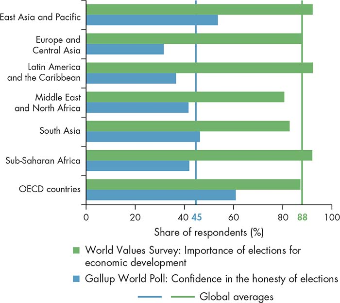

For most of the 19th and 20th centuries in Uruguay, the overall quality of public services was low, and political connections were the main vehicle for accessing the goods and services provided by the state. In fact, clientelist (patron-client) practices were the norm. Yet, in recent decades, government performance in Uruguay has steadily improved, making the country a rare contemporary overachiever—a society that has succeeded in curbing corruption and promoting a virtuous cycle of institutional change toward better governance (Mungiu-Pippidi 2015; Buquet and Piñeiro 2016). Today, Uruguay is ranked the world’s 21st least-corrupt country, according to Transparency International’s 2015 Corruption Perceptions Index (Transparency International 2015).
What accounts for Uruguay’s successful transformation? Although a complex set of circumstances and contingencies was ultimately responsible, evolving action on the part of Uruguay’s citizens and their interaction with elites in the policy arena were essential ingredients. The creation of programmatic parties after civilian rule was reestablished in 1985 played an important role. Social groups made efforts to build coalitions with interest groups that shared the same preferences—such as the urban sector hit by the economic crisis—and to channel popular demands through a new coalition of political actors (Frente Amplio) that would become a political option to the traditional groups in power. The new coalition increased contestability and managed to bring into the policy arena new demands for equitable access to public resources, accountability, and better-quality services. Eventually, elections rewarded the politicians who delivered on—and credibly committed to—their announced reforms, changing the incentives of elites and increasing the opportunity costs of old clientelist practices. Over time, political, administrative, and economic reforms increasingly reduced politicians’ opportunities to capture state resources for private purposes.
The experience of Uruguay illustrates how multiple mechanisms of engagement can help citizens influence the policy arena by changing incentives, preferences, and contestability to generate more equitable development. Modes of citizen engagement include elections, political organizations, social organizations, and direct participation and deliberation. Because all these expressions of collective action are imperfect, they complement rather than substitute for one another. As the example of Uruguay shows, it is their strategic combination that makes governments more responsive to citizens’ needs and opens up opportunities for sustainable change.
Chapter 7 points out that elites are not monolithic; rather, they engage in bargains that reflect diverse preferences and incentives and ultimately shape policy formulation and implementation. Such differences in objectives among elites can open up opportunities for citizens to support change. Indeed, important changes in history have been driven by coalitions between reforming elites and organized citizens that support reform initiatives and overcome the opposition of other elites (Fukuyama 2014; Fox 2015).
Important changes in history have been driven by coalitions between reforming elites and organized citizens that support reform initiatives.
The ways in which elites and citizens interact to create coalitions for change are often shaped by existing institutions of vertical and horizontal accountability that define the rules of the game in the policy arena. As discussed in chapter 7, these rules are often the result of elite-elite bargains that are designed primarily to serve elite interests. As this chapter shows, however, certain accountability institutions can perform new functions and create an enabling environment for citizen agency, opening up opportunities for enhanced contestability and elite-citizen interaction in ways often not anticipated by the actors who originally designed them. Yet, the outcomes of such institutional reforms are not predetermined. Citizen agency can help translate favorable conditions into effective reforms that drive positive change.
This chapter focuses primarily on the conditions under which citizen engagement can be a driver of positive change, while recognizing that each mechanism of engagement—elections, political organizations, social organizations, and public deliberation—has inherent limitations. Indeed, none of these mechanisms is a panacea: at times, elections may legitimize socially undesirable policies; political and social organizations can lead to violence and rent-seeking; and deliberation can be captured by private interests and opportunistic elites. These mechanisms, however, play a fundamental role in the process of interaction among state and nonstate actors to design and implement policies and to bring about changes in formal rules, particularly in areas that affect minority groups and those generally excluded from the policy arena. When effective, the interaction of these mechanisms of citizen engagement can bring about significant changes in governance through nonviolent means.
Elections are among the most well-established mechanisms available to citizens to strengthen accountability and responsiveness to their demands.1 When effective, elections can help improve the level and quality of services provided by the state by selecting and sanctioning leaders based on their performance in providing public goods. They can help citizens overcome collective action problems so they can give leaders incentives to support the public goods favored by the majority of citizens. However, elections can be an unhealthy form of citizen engagement when they instead serve to select and sanction leaders based on their provision of private goods (Khemani and others 2016). Elections can be subject to manipulation, fraud, violence, vote buying, and patronage, which undermine their effectiveness in holding leaders to account, resulting in perverse incentives.
When effective, elections . . . can help citizens overcome collective action problems so they can give leaders incentives to support the public goods favored by the majority of citizens.
Elections can be particularly effective at the local level, where voters might be better able to coordinate and shape the incentives of local politicians to deliver—including by curbing corrupt behavior. In China, for example, the introduction of village-level elections increased total local expenditures on public goods by about 50 percent and helped curb the rent-seeking behavior of local officials and reduce inequality by promoting land redistribution to local villagers (Shen and Yao 2008; Martinez-Bravo and others 2011). Likewise, during the phasing in of decentralization and the shift to direct elections across districts in Indonesia in the late 1900s, districts in which governors were directly elected experienced more efficient revenue collection and spending than districts ruled by centrally appointed governors (Skoufias and others 2011; Martinez-Bravo 2014).
Elections can also curb ethnic favoritism in the allocation of public resources by placing constraints on executive power. In Kenya, for example, during the authoritarian period districts that shared the ethnicity of the president received three times as much public investment in roads (figure 8.1). However, under multiparty electoral democracy this effect has disappeared, suggesting that elections successfully constrained the ability of leaders to divert public resources for partisan goals (Burgess and others 2015). Likewise, a comparison of fertility rates across 28 countries in Sub-Saharan Africa reveals that multi-party elections and leadership changes associated with electoral mechanisms significantly reduced infant mortality rates through improved health care (Kudamatsu 2012).
Figure 8.1 In Kenya, elections changed the incentives of the ruling elites, reducing the scope of ethnic favoritism
Encouragingly, opportunities for citizens to engage in the public decision-making process through voting have increased substantially over the last half- century. At the beginning of the so-called Third Wave of democratization in 1974, there were only about 40 electoral democracies in the world, mostly confined to the industrialized Western world (Huntington 1991). Today, the number has more than doubled (to about 100), with more than half of the world’s countries choosing their leaders through elections in which a change in government is a real possibility. Elections have become a fast-spreading norm to legitimize state authority and organize human societies (Diamond 2008). Even in places where open contestation at the national level is absent or restricted, elections have been introduced at the local level to improve oversight of local officials, opening opportunities for participation and contestation of public policies (Gandhi and Lust-Okar 2009).
Despite the global spread of elections, the space for effective citizen engagement is compromised by the perception that, on average, the quality of the electoral process is declining worldwide (figure 8.2). Although regular elections can improve the overall level of economic policies by disciplining leaders, this structural effect is conditional on the quality of those elections (Chauvet and Collier 2009). Newly established democracies in low-income countries are especially vulnerable to electoral manipulation. Indeed, the experience of many developing countries suggests that the principle of one person, one vote is often undermined in practice by incumbent leaders who seek to minimize the risk of losing power. Elites can resort to multiple strategies of manipulation that undermine the integrity of the electoral process, including the use of legal instruments that ban certain political parties or individual candidates from joining the electoral contest, the adoption of complex voting registration regulations that effectively disenfranchise certain groups of voters, the resort to electoral fraud, and, in extreme cases, voter intimidation and physical repression of political opponents (Schedler 2002).
Figure 8.2 Electoral democracies are spreading, but the integrity of elections is declining
Sources: WDR 2017 team, using data from the Center for Systemic Peace, Polity IV (database), various years (number of electoral democracies) and Bishop and Hoeffler 2014 (free and fair elections).
Note: Over time, there is a larger number of countries where elections are the main instrument to select leaders; the decline in the share of “free and fair” elections could be partially driven by the incorporation of new, less developed electoral systems, but that is unlikely to explain the total decline.
Source: WDR 2017 team, based on Burgess and others 2015.
Note: The figure covers the years 1963–2011. The share of road development expenditure and the share of population are relative to district populations in 1963. A district is defined as coethnic if more than 50 percent of its residents are from the same ethnic group as that of the president in the given year. A ratio above 1 indicates the presence of ethnic favoritism.
Challenges to free and fair elections are reflected in the widespread dissatisfaction and disillusionment among citizens. While on average almost 90 percent of respondents worldwide view free and fair elections as an important instrument for improving economic conditions in their country, they often do not trust their quality. Less than half of respondents to the latest world Gallup survey, on average, have confidence in the integrity of the electoral process; mistrust is especially high in Europe and Central Asia and in Latin America and the Caribbean (figure 8.3). These perceptions matter because they shape citizen engagement and citizens’ propensity to vote (Birch 2010). Figure 8.4 is consistent with this claim, showing that voter turnout is declining worldwide. Moreover, the lack of electoral integrity and a persistent climate of mistrust over time undermine the legitimacy of the political system, fueling protests, mass demonstrations, and, in extreme cases, outbreaks of electoral violence and civil war.2 The 2007 Kenyan election, with an estimated 1,200 deaths and the displacement of more than 300,000 people, dramatically illustrates this point.
Figure 8.3 Although citizens value elections as an important route to economic development, less than half of respondents worldwide have confidence in the integrity of elections

Sources: WDR 2017 team, using data from World Values Survey, Wave 6, 2010–14, and Gallup Organization, Gallup World Poll, 2010–15.
Note: The World Values Survey covers a sample of 41 countries, and the Gallup World Poll covers a sample of 142 countries. OECD = Organisation of Economic Co-operation and Development.
Figure 8.4 Voter turnout worldwide from 1945 to 2015 indicates unequal citizen participation and the risk of biased representation of policy preferences
Source: WDR 2017 team, using data from International IDEA, Voter Turnout Database, various years.
Note: The line refers to average voter turnout using locally weighted smoothing, while the bars indicate absolute number of elections in a given year.
Transparency and the provision of timely and relevant information can help improve the quality and effectiveness of elections (Khemani and others 2016). The average voter may not have the information required to properly assess government performance and clearly assign responsibilities. Giving voters accurate and credible information from trustworthy sources such as independent media or oversight institutions can change the prevailing social norms, thereby reducing information asymmetries and increasing voters’ willingness to punish incumbents for poor performance and bad practices such as corruption. For example, in 2003 the federal government of Brazil launched a national anticorruption program that targeted municipal governments with random audits by the national audit agency. The results were publicly disseminated through the media (radio, television, and newspapers). When the audit reports disclosed information about corrupt practices, corrupt mayors were punished at the polls, while mayors with no irregularities were rewarded with reelection. These effects were stronger in municipalities with local radio stations, pointing to the important role played by the media in amplifying and disseminating campaign messages (Ferraz and Finan 2008). Similar results have been reported in Mexico and Puerto Rico, using information disclosed in audit reports (Larreguy, Marshall, and Snyder 2015; Bobonis, Cámara Fuertes, and Schwabe 2016), and in India, using report cards on the performance of incumbent politicians (Banerjee and others 2011).
Information can strengthen the quality of citizen engagement even in countries in which partisan loyalties are strong and a dominant party has been entrenched for some time. In Sierra Leone, increased access to information about local politicians through radio campaigns had a significant effect in shaping behavior and increasing voters’ willingness to cast their ballot for a politician of a different party and outside their own coethnic group (Casey 2015).
However, as discussed in the World Development Report 2016: Digital Dividends (WDR 2016), when the information disclosed is not salient to voters or when attributing individual responsibility is difficult, the incentives of politicians to respond with better service provision remain low, and transparency can have no effect on vertical accountability (see spotlight 11 on transparency and accountability initiatives). In Uganda, the provision of scorecards on the performance of members of the parliament did not have any impact on politicians’ selection or performance (Humphreys and Weinstein 2012). Likewise, radio-based information campaigns on public health and primary education in rural Benin had no effect on shaping politicians’ incentives to improve health and education services, despite reducing voters’ support for patronage practices (Keefer and Khemani 2014). Sometimes, politicians can respond to the disclosure of information by increasing their vote-buying efforts, thereby preempting its potential effect on voting behavior. In the Philippines, an initiative to share information about a large public spending program ahead of municipal elections prompted incumbent politicians to increase vote buying. In the end, the campaign had no discernible effect on voting behavior (Cruz, Keefer, and Labonne 2015).
In the presence of preexisting preferences and entrenched social norms, transparency alone is unlikely to trigger change—and might even lead to more polarized preferences (see spotlight 12 on the media). In these circumstances, citizen engagement through sustained processes of policy deliberation might increase the likelihood of better results (as discussed later in this chapter).
Citizens’ expectations of what politicians can and should deliver can also be shaped by social norms and so-called mental models, as discussed in the World Development Report 2015: Mind, Society, and Behavior (World Bank 2015).3 These norms and mental models can lead to inefficient demands. To cite a notable example, many societies are organized around patron-client (or clientelist) exchanges, in which voters expect politicians to deliver private benefits in return for political support, and they reward or punish politicians based on these expectations (see chapter 6).4 An attempt by either party involved to break the terms of the exchange is costly and likely to fail. In the terminology of this Report, these relationships often constitute self-reinforcing equilibria. A field experiment during the 2001 presidential elections in Benin illustrates this point. National candidates who adopted clientelistic messages were more effective in mobilizing electoral support than competitors who used broad-based policy messages (Wantchekon 2003).
Recent empirical studies on voting behavior in the United States illustrate the perverse effects that citizens’ beliefs can have in shaping public policies, thereby challenging the conventional logic of democratic theory. Achen and Bartels (2016b) argue that the average citizen has little incentive to study complex political issues, engaging in what public choice theorists call “rational ignorance.” As a result, voting behavior is based not on policy preferences but on citizens’ social identities and partisan loyalties. Caplan (2008) goes a step further and argues that citizens demand policies based on ideological positions without considering the trade-offs and costs they might entail: voters not only lack information, but they also have systematic biases in favor of economic policies that have been proven wrong empirically. The persistence of popular demands for energy and fuel subsidies despite their proven fiscal and environmental costs illustrates how these behavioral dynamics are also relevant for many developing countries, undermining the opportunity to bring change through elections alone (Clements and others 2013).
Even where de jure voting rights exist and direct electoral manipulation is limited, elections may fail to effectively sanction and select leaders when citizens opt out. Voter turnout is not uniform and is often biased toward certain income groups, which leads to unequal influence in the policy arena. In this sense, the extent to which citizens engage in the electoral process is an important determinant of the effect of elections. In high-income countries, wealth and literacy rates predict turnout, suggesting that poor voters face constraints that reduce their propensity to vote.5 The lack of engagement of disadvantaged groups in turn shapes politicians’ incentives to adopt pro-poor, redistributive policies, thereby reducing social spending and reinforcing existing inequalities (see chapter 6 of this Report).
This logic implies that the de facto enfranchisement of disadvantaged voters can improve accountability by better capturing their policy preferences. In Brazil, for example, the introduction of electronic voting technology has simplified the process of casting ballots and substantially reduced the number of error-ridden and undercounted votes among the poor. The intervention effectively enfranchised 11 percent of the electorate, mainly the poorest and less educated, and contributed to higher spending on public health care, which in turn increased the access of poor pregnant women to prenatal care and reduced the incidence of underweight births (Fujiwara 2015).
Enfranchising poor voters, however, is not sufficient to change public policies. In fact, in developing countries poor people are more likely to vote than wealthy citizens. This finding implies that higher levels of turnout may not necessarily reflect greater political mobilization by the poor but rather their tendency to be more receptive to the clientelist practices used by elites to mobilize them (Pande 2011; Beramendiz and Amat 2014). Consistent with this logic, Kasara and Suryanarayan (2015) find that in poor societies rich voters are less likely to vote because the state’s extractive capacity is low, and the threat of wealth redistribution through taxation is not credible. However, as the bureaucratic capacity of the state improves and political competition becomes primarily programmatic in nature, the better-off are more likely to engage and influence fiscal policies through voting. In other words, the effect of poor voters’ enfranchisement on public policy is contingent on the nature of political competition, the specific mobilization strategies adopted by political parties, and the presence of “credible political alternatives for marginalized citizens” (Kasara and Suryanarayan 2015, 624). Programmatic political parties and social movements play an important mediating role in this respect, as discussed later in this chapter.
These analyses suggest that the common belief that elections are a sufficient mechanism to produce responsive and accountable government is based on questionable assumptions. Even when elections are more effective in changing voters’ preferences and the incentives of politicians, they are a limited instrument of control. Voting is an individual action, and -citizens face significant coordination challenges when considering whether to remove poorly performing governments, thereby limiting the credibility of the threat to punish elected officials (Manin, Przeworski, and Stokes 1999). Moreover, even when citizens manage to remove politicians whose performance is poor or diverges from their preferences, elections alone offer no credible guarantee that, once elected, new leaders will not shirk their electoral promises and credibly commit to citizens’ demands.
Citizens face significant coordination challenges when considering whether to remove poorly performing governments, thereby limiting the credibility of the threat to punish elected officials.
Overcoming the limits of collective action and electoral representation requires organizations that represent citizens’ collective interests, including political parties, interest groups, and civic associations. These organizations have the potential to strengthen the ability of citizens to monitor government performance, thereby increasing the costs for politicians shirking their electoral promises and making political commitments more credible (Ashworth 2012; Keefer 2013). As Achen and Bartels (2016a, 275) point out, “Ordinary citizens’ interests are likely to matter only insofar as the organised groups representing those interests . . . are themselves politically engaged, well-resourced, and internally accountable.” It is to these organized groups that this chapter now turns.
Through voting, individual actions can shape collective outcomes. Citizen collective action—for example, through political organizations—can also shape outcomes. Political parties are a mechanism that can solve collective action problems and can represent and articulate citizens’ collective interests, aggregate their preferences, and channel their demands in the policy-making process (Sartori 1976; Kitschelt and Wilkinson 2007).6
By solving citizens’ coordination problems and providing them with the information cues needed to evaluate the performance of incumbents, political parties play a critical role in strengthening vertical accountability (Aldrich 1995). By recruiting and socializing political leadership, political parties also play an important social function in integrating citizens into the political process and allowing different social groups to have a stake in supporting the system, thereby promoting a culture of compromise and reducing societal tensions through enhanced contestability (Diamond and Gunther 2001, 7–8; Randall and Svåsand 2002). In Tanzania, for example, the power-sharing agreements within the Chama Cha Mapinduzi party were instrumental (before the demise of Julius Nyerere) in accommodating the demands of various ethnic and religious groups, allowing power to alternate between Christian and Muslim leaders (Ezrow and Frantz 2011). This arrangement helps explain why the country was not plagued by the ethnic conflicts that prevailed in many countries in the region, despite the presence of more than 140 distinct ethnic groups.
Over the last 40 years, the global landscape of political party systems has changed. Across all income groups, unelected legislatures and single-party systems have become rare, and multiple political organizations are increasingly allowed to enter the policy arena, articulating societal interests and citizens’ demands. However, a closer look reveals important differences: in many developing countries, competition is constrained de facto by the dominant nature of the party system (figure 8.5). Where one party dominates the legislative and executive offices, the ability of citizens to influence the policy-making process through representation is reduced (Sartori 1976; Manin, Przeworski, and Stokes 1999, 48). Although, as discussed in chapter 7, dominant party systems may continue to facilitate cooperation and commitment among elites, they undermine citizen collective action by reducing the attractiveness of electoral politics as a mechanism to alter power asymmetries. Over time, the exclusionary nature of this bargaining could undermine the legitimacy of the political system.
Figure 8.5 Although the spread of multiparty systems has increased opportunities for citizen engagement, dominant parties place de facto limits on electoral competition
Source: WDR 2017 team, based on Database of Political Institutions (Cruz, Keefer, and Scartascini 2016).
Note: Income groups of countries reflect the latest categorization by the World Bank. A party system is classified as dominant when incumbents control 75 percent or more of seats in the legislature. OECD = Organisation for Economic Co-operation and Development.
The strategies adopted by political parties to mobilize voters have important implications for development because they directly shape the nature of elite-citizen bargaining. On one end of the spectrum—as discussed in chapter 6—clientelistic political parties mobilize support through targeted transfers, cash payments, pork barrel public investment projects, patronage jobs, and other private goods (Kitschelt and Wilkinson 2007). On the opposite end of the spectrum, programmatic political parties maintain a coherent position on key policy issues, stick to these policy commitments over repeated electoral rounds as their main appeal to attract votes, and deliver on them once in office.7
Because the electoral success of programmatic parties—and their own political survival—depends heavily on the credibility of their policy commitments, these parties are more likely to develop organizational arrangements that prevent free-riding and shirking by party members, and so they are more likely to deliver on their electoral promises. Consequently, the quality of public services is significantly higher in countries in which the main parties (government and opposition alike) exhibit programmatic characteristics, and the effect is larger under conditions of electoral competition (figure 8.6). Likewise, programmatic parties increase the possibility that public sector reforms will be adopted and successfully implemented (Keefer 2011, 2013; Cruz and Keefer 2013).
Figure 8.6 Programmatic parties perform better than clientelist parties in improving the quality of public services, especially in competitive party systems
Sources: WDR 2017 team, based on Keefer 2011, 2013; Database of Political Institutions (Cruz, Keefer, and Scartascini 2015); and World Bank, World Development Indicators (database), various years.
Unfortunately, entrenched clientelistic political parties can be difficult to remove. They can become a self-reinforcing equilibrium as they deliver on their commitment to provide private benefits to constituents. Under these circumstances, increased party competition can lead to more—not less—clientelism because poorer voters are more vulnerable to vote buying and therefore less likely to demand programs or policies. The experience of many low-income countries in Sub-Saharan Africa is consistent with this argument and illustrates how multiparty competition has fueled, rather than reduced, clientelism.8
Voters selecting between a programmatic party and a clientelistic party must weigh the credibility of each party’s commitments and also compare the benefits promised by each party. To be viable, programmatic parties must successfully deliver on their promises. However, even well-intended politicians often cannot credibly commit to deliver because of weak state capacity and the absence of favorable institutional arrangements—such as strong checks and balances, a well-functioning parliament, and independent judiciaries—that can sanction leaders who renege on their promises. Historical evidence suggests that where meritocratic civil service recruitment predated the development of mass-based political parties, politicians were prevented from capturing the bureaucracy for patronage purposes, and programmatic parties were more likely to develop (Shefter 1977). However, where clientelistic parties already exist, making the commitments of programmatic parties more credible in the short term is difficult because it depends on building state capacity that itself may require the elimination of clientelism.
At times, however, a clientelistic equilibrium can be broken by a change in the relative benefits of clientelistic versus programmatic parties. Indeed, reducing the benefits of clientelism helps explain why developed countries are more likely to have programmatic parties (figure 8.7). At low levels of economic development, the average voters tend to reward clientelist practices rather than support uncertain programmatic platforms because they lack alternative means to secure basic services and are most vulnerable to adverse economic shocks. However, as societies develop, the marginal impact of targeted benefits on the welfare of the average voter is negligible relative to the potential benefits they can derive from public policies. Consequently, citizens’ expectations change; they demand higher-quality services and public goods and become less credible in their commitment to “sell” their vote to politicians (Kitschelt and Wilkinson 2007; Stokes and others 2013).
Figure 8.7 Programmatic parties tend to emerge at higher levels of development, but significant variation exists among countries at similar stages of development
Sources: WDR 2017 team, using data from World Bank, World Development Indicators (database), 2016, and V-Dem 2016.
Note: Income is represented by the natural log of the average per capita income in purchasing power parity (PPP) terms in 2008–09. A given party’s “programmatic effort” refers to the set of “goods” that the party offers in exchange for political support. The ranks range from 0 (= clientelistic efforts) to 4 (= policy/programmatic efforts). Intermediate values reflect combinations of both strategies (Coppedge and others 2016, 102). OECD = Organisation for Economic Co-operation and Development.
A similar logic explains why political parties tend to diversify their “portfolio” across the national territory and adopt a combination of clientelist and programmatic strategies to mobilize voters, depending on their expected electoral benefits (Kitschelt and Wilkinson 2007, 30–31). In Argentina and Mexico, for example, municipalities that exhibited higher levels of electoral competition and had a larger middle class received the largest influx of public goods, changing politicians’ incentives to opt out of clientelism as a strategy to maintain political support (Magaloni, Diaz-Cayeros, and Estévez 2006; Weitz-Shapiro 2014).
At other times, economic crises or stagnation can undermine systems of patronage, triggering the emergence of programmatic parties. In the Republic of Korea, for example, the financial crisis of 1997 reduced the resource base for clientelist practices and triggered policy reforms—such as regulations aimed at improving transparency in political party finances—that reconfigured partisan competition around programmatic lines (Hellmann 2011; Wang 2012). The outcome of these shocks, however, is not predetermined; worsening economic conditions can also trigger populist appeals that result in political outsiders gaining power on the basis of vague policy proposals. By subordinating the execution of these proposals to the will of a charismatic leader, populism undermines the emergence of programmatic parties and can lead to a shrinking bargaining space, reducing opportunities for citizens to hold elites accountable.9
Finally, the commitments of programmatic parties may be more credible at the local level. Decen-tralization reforms can lower the barriers to the entry of grassroots movements and local civic associations that may be able to compete in elections on a programmatic platform. In Bolivia in the 1990s, indigenous peoples’ movements took advantage of decentralization reforms and newly institutionalized spaces for citizen participation to overcome their divisions, organize collectively through autonomous political parties, and effectively bargain for collective and territorial rights in various municipalities.10 These experiences created demonstration effects in other municipalities, strengthening the electoral base of indigenous parties and paving the way for their access to the presidency (Van Cott 2005, 2006).
When political parties become tools in elite bargains to help solve coordination and commitment challenges among elites, they may fail to represent and articulate the demands and preferences of ordinary citizens. Political parties can act as gatekeepers, adopting laws and regulations that grant ruling elites special advantages and increase the barriers to entry for potential challengers. This behavior can undermine vertical accountability because certain groups of citizens (and the interests they represent) may find themselves systematically excluded from the policy arena or unable to bargain within a level playing field. In South Africa, for example, the National Party enforced the apartheid regime through formal legislation from 1948 to 1994, denying basic political, social, and civil rights to the black majority on the basis of ethnic prejudice.
Political parties can also deliberately try to reduce contestability in the policy arena by adopting political financing laws and regulations that work in their favor. Because of the rising costs of politics and often in reaction to major political corruption scandals, many countries across the world have introduced public funding regulations. These aim to create a level playing field, helping new interest groups and small opposition parties compete on a more equitable basis with incumbent parties, while also reducing the influence of big corporations and private interests in shaping party agendas. However, countries with dominant party systems are less likely to introduce public funding regulations (figure 8.8), reducing the level of contestability. In Africa, for example, only a minority of countries have adopted and effectively enforced public funding laws, contrary to global trends. This regional trend is often coupled with limited transparency on party financing and a heavy reliance on funding from private—often illicit—sources.11
Figure 8.8 Dominant party systems are less likely than competitive systems to introduce legal provisions for public funding, suggesting efforts to reduce contestability
Sources: WDR 2017 team, using data from International IDEA, Political Finance Database, 2016, and Database of Political Institutions (Cruz, Keefer, and Scartascini 2016). Countries are classified based on the presence or absence of legal provisions for direct public funding of political parties. Income groups reflect the latest categorization by the World Bank.
Note: OECD = Organisation for Economic Co-operation and Development.
Well-established political parties can also become risk averse and opportunistic in the way they articulate citizens’ demands. They may “sponsor” societal preferences only when the expected returns in terms of electoral gains are positive and large, ignoring demands that are salient to only a small segment of the electorate or that appear too risky because they deviate from established social norms. As a result, the policy arena can shrink considerably and become biased against disadvantaged citizens such as women, indigenous people, and ethnic and sexual minorities.
Taken together, these tendencies often make political parties part of the problem rather than the solution. Public opinion surveys suggest that political parties are now the least-trusted political institution worldwide (figure 8.9). Although significant variation exists across income groups as well as between and within regions, these perceptions highlight an important crisis of representation for traditional representative institutions, forcing citizens to look for alternative mechanisms to organize collectively and bring their demands into the policy arena. The decline of party activism and membership in the Organisation for Economic Co-operation and Development (OECD) is consistent with this argument (Whiteley 2011). However, through social movements, civic associations, and spaces of deliberation, citizens can enhance contestability and change the incentives of the existing political parties, making them more likely to adapt and respond to new societal demands, as discussed in the following sections.
Figure 8.9 Political parties are on average the least-trusted political institution worldwide
Sources: WDR 2017 team, using data from Afrobarometer, Round 6, 2014–15; Arab Barometer, Wave 2, 2010–11; Center for East Asia Democratic Studies, National Taiwan University (located in Taiwan, China), Asian Barometer, Wave 3, 2012–14; European Commission, Eurobarometer, 2015; Vanderbilt University, Latin American Public Opinion Project, 2014.
Note: “Average trust in public institutions” is the average of trust in the government, legislature, judiciary, police, and army. Trust is calculated as the sum of all positive answers. Trust in parties also decreases as societies develop, suggesting growing demands and expectations from citizens.
By coordinating action among citizens around specific issues, social organizations can bring to prominence new demands and interests (Heller 2013). In doing so, social organizations can potentially affect the three levers of change—incentives, preferences and beliefs, and contestability. First, they can change the incentives of elites by increasing the political cost of opposing specific policies. Second, they can reshape the preferences and beliefs of actors through the creation of new collective identities and the integration of new interests in the policy arena. And, third, they can enhance contestability by aligning with actors that can effectively challenge the existing elites and limit their bargaining power.12 In these ways, social movements can broaden policy debates and push for new laws and policies that rebalance access to (and distribution of) power among groups within societies, including gender equality laws, indigenous territorial rights, and transparency and right to information laws. However, social organization can also lead to undesirable social outcomes such as opposing reform, creating violence, and reinforcing rent- seeking for specific clientelistic groups. The discussion that follows emphasizes ways in which social organization creates positive change.13
Across the world in recent years, thousands of citizens have taken to the streets to question the legitimacy of fiscal austerity policies, condemn corruption scandals, and protest the failure of governments to address the growing inequalities within societies, among other issues (Ortiz and others 2013; Carothers
and Youngs 2016).14
These trends suggest that ordinary citizens are increasingly willing and able to mobilize peacefully to hold government accountable and voice their discontent when their confidence in public institutions is undermined and when they perceive that the formal mechanisms of representation—such as elections and political parties—have weakened their capacity to articulate their interests and channel their demands.15
This process is not accidental. Social movements—as an example of a specific type of social organization—are embedded in broader institutional and socioeconomic environments that shape the strategies and choices available to political actors (Tarrow 1998).16 Over the last 40 years, the institutional environment for civic activism and social movements has become increasingly more permissive: the spread of democratic norms and practices has widened the civic space, with a growing number of countries enacting laws and regulations to enable and support the formation and functioning of autonomous civic society organizations. Likewise, government interventions to control or censor the media have declined globally (figure 8.10), allowing independent media actors to bring new issues into the national debate, publicizing the claims of social movements, and magnifying their demands (see spotlight 12 on the media). The diffusion of new information and communication technologies (ICTs) has further enabled citizen collective action by facilitating access to information, lowering transaction costs for the creation and development of associational networks, and providing effective coordination tools for disadvantaged groups across the globe (Bennett and Segerberg 2012). As a result of these processes, social movements are now increasingly organized across national boundaries (figure 8.11)—see Goodwin and Jasper (2015, 157).
Figure 8.10 After decades of progress, civic space is shrinking globally, driven by higher government restrictions on media and CSO entry
Source: WDR 2017 team, using data from V-Dem (database), 2016.
Note: The average is based on a sample of 78 countries for which there is consistent data for all years presented. The “CSO entry and exit” variable is measured on a 0–4 scale, ranging from 0 (more constrained) to 4 (less constrained). The “government censorship effort (media)” variable is reversed and measured on a 0–4 scale, ranging from 0 (less censorship) to 4 (more censorship). More information on specific variables and survey methodology can be found in World Bank and V-Dem (2016) and Coppedge and others (2015). CSO = civil society organization.
Figure 8.11 Taking advantage of the digital revolution, social movements are increasingly organized across national boundaries
Source: WDR 2017 team, based on Smith 2008.
Note: The bars measure the number of Transnational Social Movement Organizations (TSMOs), defined as organizations that combine activists from multiple countries around common social change goals.
Evidence from the last decade, however, suggests that the global trend may be a shrinking civic space (figure 8.10). Many governments are changing the institutional environment in which citizens engage, establishing legal barriers to restrict the functioning of media and civic society organizations, and reducing their autonomy from the state. For example, in the case of media, governments may award broadcast frequencies on the basis of political motivations, withdraw financial support of media organizations and activities, or enforce complex registration requirements that raise barriers to entry into a government- controlled media market. In the case of nongovernmental organizations (NGOs), governments might resort to legal measures to restrict public and private financing or pass stricter laws that restrain associational rights (Carothers and Brechenmacher 2014). Although these initiatives are sometimes motivated by legitimate concerns for public order and national security, they can be used by elites as a strategy to narrow the policy space and limit the channels available to citizens to engage and influence the policy arena.
Differing incentives and preferences among elite actors open opportunities for social organizations to support change by forming coalitions with reforming elites (Fukuyama 2014; Fox 2015). When economic crises or other external shocks shift the incentives and relative power of elite actors, they may be more likely to defect from the ruling coalition and build alliances with excluded citizen groups. In the Philippines, for example, business elites that originally supported Ferdinand Marcos’s coup in 1972 began to defect under the pressures of economic decline. When a major event—the assassination of the main opposition leader in 1983—triggered a wave of protests, grassroots associations forged an anti-Marcos reform coalition, the People Power movement, comprising members of the private sector, representatives of the opposition, religious leaders, and civic organizations. The mobilization culminated in peaceful demonstrations that brought millions of citizens to the streets, forcing Marcos to resign in 1986 and paving the way for the restoration of democratic institutions (Blitz 2000).
In the absence of an identifiable shock, social organizations may be able to shift elite incentives to form a coalition through sustained efforts over a longer period of time. In India, for example, the Right to Information Act (RTIA) was passed in 2005 after a 10-year struggle (box 8.1). Factors such as ideology, religion, leadership, and provision of selective incentives can help sustain commitment to social movements despite lack of short-term success. Labor unions, for example, may provide members with services to sustain participation in the aftermath of failed bargains.
Box 8.1 Social movements and bottom-up pressures for reform: Right to information legislation in India
Since independence, the Indian government has operated under the colonial Official Secrets Act (OSA) of 1923. Officially conceived as a legal instrument to prevent the disclosure of information that can affect security and national sovereignty, in practice the OSA has empowered authorities to withhold information from citizens at the government’s discretion. This situation has created a culture of secrecy that characterizes administrative and political practices, undermining the accountability of state institutions. Despite several attempts at reform by technical working groups and parliamentary commissions, the OSA has never been repealed (Mander and Joshi 1999).
In the 1990s, a rural-based social movement emerged in the state of Rajasthan, demanding access to information on behalf of wage workers and small farmers. The rural poor were often cheated and not paid their full wages, and they could not challenge the paymasters because they were denied access to attendance registers. The movement eventually spread nationwide, leading to the formation of the National Campaign for Peoples’ Right to Information (NCPRI) in 1996. Members of NCPRI built strategic alliances with other societal groups, including journalists, lawyers, and human rights activists, thereby creating a strong constituency for reform that moved demands for transparency to the forefront of the political agenda and eventually succeeded in pushing adoption of the Right to Information Act in 2005 (Bari, Chand, and Singh 2015).
Source: WDR 2017 team.
Elite bargains can have unintended consequences, as discussed in chapter 7. Sometimes, they can create the conditions for social movements to emerge and bring new interests into the policy arena. In Tunisia, for example, progress on gender equality following independence was largely a by-product of an elite bargain—between political and business elites to recruit skilled labor for the growing manufacturing sector—rather than the outcome of feminist mobilization. The top-down policy choices associated with this bargain then created an enabling environment in which women’s organizations emerged and were strengthened over time. In 2011 the Jasmine Revolution provided women’s organizations with a window of opportunity to leverage their organizational strength and lobby successfully for a mandatory gender quota for elections to the National Constituent Assembly, boosting women’s representation in the Assembly to 26 percent. This initial success in turn allowed women’s organizations to change elite preferences—shaping the agenda of political parties—which led to the integration of gender provisions in the new constitution (O’Neil and Domingo 2016).
Major political events such as wars and postconflict constitutional design processes can also alter the balance of power within societies, playing the role of coordination devices to enable collective action among marginalized groups to mobilize and influence the policy arena (box 8.2). In Afghanistan, for example, sustained efforts over the last decade by domestic women’s organizations, in collaboration with international donors and NGOs, played a key role in changing the preferences of members of parliament and state officials within the bureaucracy. That change influenced the drafting of a controversial law on the Elimination of Violence Against Women, which introduced criminalization of gender violence for the first time in Afghan history (Larson 2016).17
Box 8.2 The mobilization of women and promotion of gender-based policies in postconflict settings: The case of Sub-Saharan Africa
Across the world, women’s political representation is on average higher in postconflict countries than in countries that have not experienced conflict (figure B8.2.1).a This trend is particularly evident in the Middle East and North Africa and Sub-Saharan Africa, where women’s presence in parliaments is almost double the level in countries with no conflict. Tripp (2015) provides a possible explanation for these patterns, focusing on Sub-Saharan Africa where postconflict countries have been more successful in promoting gender equality laws across multiple policy areas—including integrating women’s rights in their constitutions (figure B8.2.2). Rather than looking at a single driver, Tripp highlights the interaction among three drivers. The first is the disruption in gender relations that is specific to conflict-prone countries; women take over many of the traditional tasks of men, leading to shifts in gender norms (see chapter 4). The second is the rise of domestic women’s movements, facilitated by the inclusive and competitive nature of the postconflict environment. The third is the influence of international processes and actors involved in the promotion of gender laws and international norms on gender inclusion (further discussed in chapter 9).
Figure B8.2.1 The rate of political participation of women is higher in countries emerging from conflict
Sources: WDR 2017 team, using data from UCDP/PRIO, Armed Conflict Dataset, 2015; World Bank, World Development Indicators (database), 2016.
Note: The figure indicates the proportion of seats held by women in national parliaments. Postconflict countries are those that had at least one year of conflict after 1985 with more than 1,000 deaths. Countries with ongoing conflict as of 2014, and high-income members of the Organisation for Economic Co-operation and Development (OECD), were excluded.
Figure B8.2.2 In Africa, postconflict countries have been more likely to integrate women’s rights in their constitutions
Source: Tripp 2015, 1275.
Note: The figure shows the percentage of African countries with constitutional provisions related to women’s rights.
The experience in Rwanda reflects the interplay and relative strength of these three factors. In Rwanda, women played a critical role in the Rwandan Patriotic Front (RPF), holding executive positions within the movement while in exile. In the postconflict period, women activists have been powerful agents of transformation, advocating for greater responsibilities in light of the leadership roles played by women in the armed struggle. Even before the establishment of quotas, women held nearly 50 percent of the seats that the RPF controlled in the parliament (Powley 2005). Moreover, women’s involvement in the constitution-making processes and later in the parliament provided them with the organizational strength and legitimacy to advocate for the passage of many gender equality and antidiscrimination laws, including the 1999 inheritance law, the 2004 National Land Policy, the 2005 Organic Land Law (Powley 2005), and the 2009 legislation against gender-based violence. This influence also explains why—once the new 2003 constitution introduced a quota of 30 percent women in all decision-making bodies—Rwanda far exceeded the target, becoming a front-runner of gender equality and women’s political participation in the world, with 64 percent of total seats in the parliament occupied by women, followed by Bolivia (53 percent) and Cuba (49 percent).b
Source: WDR 2017 team.
a. This box largely relies and builds on Tripp (2015).
b. Hunt (2014). For the world classification, see http://www.ipu.org/wmn-e/classif.htm.
Law plays different roles in society (see chapter 3). It orders behavior, legitimating social hierarchies and power relationships. It can also be used by citizens to contest power and make legal claims to challenge the status quo and push the boundaries of citizenship rights (McCann 2004). It is not a coincidence that the most transformative cases of social movements of the 20th century—including labor, women’s rights, and civil rights, and, more recently, indigenous and environmental movements—have all explicitly adopted the language of law and the discourse of rights as legal entitlements, creating a “shared normative base” that has facilitated collective action (Heller 2013, 4).
Legal institutions of horizontal accountability such as national courts and ombudsmen offices can also be a strategic asset for organized groups of citizens. By activating these institutions, social movements can raise awareness of collective entitlements and citizenship rights, forging the collective identities of disadvantaged citizens and raising the salience of individual grievances (Peruzzotti and Smulovitz 2006; Fox 2015). Moreover, the ability to achieve legal victories in court can boost confidence among social actors, strengthening the commitment to organize by effectively using legal instruments in their favor. Mass media campaigns are often used as a complementary strategy to publicize court victories and put the news at the forefront of the national agenda (see spotlight 12 on the media). As the history of U.S. civil rights movements suggests, legal mobilizations have often generated a “contagion effect,” transforming local victories into nationwide struggles for rights (McCann 1994). Similar dynamics are also spreading in developing countries. In Botswana, for example, women’s groups successfully challenged discriminatory customary laws and pushed for the implementation of gender equality principles enshrined in the constitution by adopting litigation strategies that culminated in a series of victories in far-reaching cases before national courts (Hasan and Tanzer 2013).
The effectiveness of legal strategies, however, often depends on the presence of a well-functioning and independent judiciary and a strong network of legal aid experts who can support the claims of social organizations and resist pressures to deny them. Unfortunately, judicial independence is often undermined in many countries, leading some scholars to criticize the faith placed in courts as mechanisms of social change as nothing more than “hollow hope” (Rosenberg 1991). Other studies, however, contend that the spread of international courts and legal bodies associated with international human rights laws provide social movements with additional toolkits to overcome the limitations of state courts and change the incentives of elites, pushing for compliance with laws and regulations ratified by national governments (Keck and Sikkink 1998). The role of these international bodies is explored in chapter 9.
Social movements can give voice to powerless groups and put pressure on public authorities, but they often fail to consider the trade-offs associated with the proliferation of competing interests in the policy arena. In many developing countries, state capacity is weak and political parties are unable to perform their function to filter these demands and subordinate them to higher public priorities. In these circumstances, public institutions could become overloaded with multiple pressures, undermining the coherence and effectiveness of public policies. This overloading could generate frustrations and discontent among citizens that, if not properly addressed, can eventually lead to violence, conflict, and political decay (Huntington 1968)—chapter 4 explores violence as a manifestation of governance failure.
Moreover, citizen engagement through social organizations is not necessarily motivated by a vision of a more equal and just society. On the contrary, these organizations can also reinforce social hierarchies, be captured by narrow interests, or be used by reactionary and extremist groups for exclusionary purposes (Gaventa and Barrett 2012, 2399–2401). As discussed later in this chapter, “civil society failure” is also possible—the risk that social groups “may also face significant problems of coordination, asymmetric information, and inequality, which may limit their ability to respond to and resolve market and government failures” (Mansuri and Rao 2013, 285). When social movements are captured by narrow interests, they may reinforce existing inequalities rather than overcome them. Even when not captured, social organizations may be decidedly “uncivil” and specifically designed to deny equal rights to other groups (Heller 2013).
Social movements drive “organic participation” in which citizens contest state policy from outside the state. “Induced participation,” in which citizens deliberate policies through formal state interventions, is also important for articulating citizens’ interests and overcoming collective action challenges. In the area of development assistance, induced participation takes the form of decentralization and community- driven development, but in a broader context it includes various forms of direct democracy and public deliberation. Public deliberation—spaces and processes that allow group-based discussion and weighting of alternative preferences—can help level the playing field in the policy arena. In certain contexts, deliberation can leverage marginalized groups’ efforts to rebalance power relationships in their favor. And citizen participation can be instrumental in improving the quality of deliberation and the legitimacy of decisions by clarifying the needs and demands of local constituencies (Heller and Rao 2015).
Public deliberation—spaces and processes that allow group-based discussion and weighting of alternative preferences—can help level the playing field in the policy arena.
Induced participation and public deliberation not only increase the contestability of the policy arena, but also have the potential to aggregate preferences and reshape them through dialogue and argumentation. In Of the Social Contract, Jean-Jacques Rousseau ([1762] 2004) argues that participation is not merely a way of reaching a decision, but also a process through which citizens develop a civic consciousness, develop empathy for other views, and learn to take the public interest into account. In other words, participatory processes can help achieve cooperation by shifting preferences.
Public deliberation is most feasible, and thus most successful, at the local level, and it is often seen as a complement to decentralization reforms. In Brazil, following decentralization in 1988, the city of Porto Alegre introduced participatory budgeting in 1990. A decade later, participatory budgeting assemblies drew over 14,000 participants, many of them poor. They led to improved outcomes, with more money dedicated to pro-poor investments, resulting in improved sewerage and water coverage, higher school enrollment, and more affordable housing (Baiocchi 2005). In India, the 73rd amendment to the constitution, approved in 1993, mandated village elections at three levels—village councils (panchayats), block councils (block panchayats), and district councils (zila panchayats)—as well as regular village meetings (gram sabhas) open to the entire village. In the state of Kerala, authorities subsequently devolved 40 percent of the development budget to village councils, increasing the demand for local participation (Mansuri and Rao 2013).
However, participatory approaches to development sometimes fail to consider the possibility of civil society failures, where, in weakly institutionalized environments, the poor are less likely to participate and participatory mechanisms can be captured by local elites (Devarajan and Kanbur 2012; Mansuri and Rao 2013). Contestability depends on de facto participation, but demand-driven participation can exclude the weakest individuals, groups, and communities, especially because the poor may face higher opportunity costs for participation. Evidence suggests that participants in public deliberations are wealthier, more educated, male, and more politically connected. Moreover, deliberations often attract similar types of people and fail to promote cross-group cohesion. When only homogeneous groups of the relatively powerful are included, participation neither enhances contestation nor serves to shift preferences. Moreover, efforts at induced deliberation may be captured by narrow interest groups, whose preferences may be overrepresented, reinforcing existing inequalities rather than overcoming them. For that reason, efforts to “export” participatory budget initiatives sometimes do not work (Baiocchi, Heller, and Silva 2011). Local-level deliberation may be especially subject to capture because of the entrenched influence of local elites (Abraham and Platteau 2004). Consequently, evidence reveals that the poor often benefit less than the nonpoor from participatory processes, especially in communities with high levels of inequality and with particularly salient and significant caste, race, or gender disparities (Mansuri and Rao 2013).
Such failures are not necessarily ameliorated by the availability of new digital technologies (Gaventa and Barrett 2012). On the contrary, as discussed in the 2016 WDR, ICT instruments may actually reinforce socioeconomic inequalities in citizen engagement (World Bank 2016). In Brazil, for example, the use of internet voting on municipal budget proposals reveals stark demographic differences between online and offline voters: online voters are more likely to be male, university-educated, and richer (figure 8.12).
Figure 8.12 In Brazil, online voting in participatory budgeting can reinforce existing inequalities
Source: WDR 2017 team, based on Spada and others 2015.
Note: R$ = Brazilian real.
The design of deliberative mechanisms can help overcome problems of exclusion and capture, particularly when such mechanisms are designed in conjunction with other reforms to improve accountability and transparency. For example, there is evidence that participatory community programs are more likely to be successful when they occur in favorable political environments—that is, when local governments have discretion and are already downwardly accountable (Mansuri and Rao 2013).
Providing information on specific policy issues and creating conditions favorable to making informed decisions can also change citizens’ preferences and act as an important mechanism to improve the terms of a policy debate and open the way for future changes in public policies. Recent experiences in deliberative polling illustrate this point, providing an innovative approach to ascertain informed, thoughtful, and representative public views on complex policy issues (Fishkin 2011).18 The media can play an important role in providing information and promoting political participation. For example, recent evidence from Kenya reveals that exposure to a weekly panel discussion program aimed at building a national conversation on governance in Kenya increased both knowledge of governance issues and participation in politics (Githitho Muriithi and Page 2014).
This chapter has analyzed the role that ordinary citizens play in driving processes of societal transformation and institutional change. Surveying historical and contemporary experiences, it argues that citizens face collective action problems that prevent them from bargaining effectively and holding government accountable. To strengthen their influence in the policy arena, citizens need to engage through multiple mechanisms designed to solve collective action problems, including voting, political parties, social movements, civic associations, and other less conventional spaces for policy deliberation. Because all these expressions of collective action are imperfect, it is their strategic combination that maximizes the chances to promote change and make governments more responsive to citizens’ needs.
As this chapter shows, citizen-led change is possible, but it is often a difficult and long-term process fraught with uncertainties. In India, grassroots organizations spent 10 years scaling up local mobilization efforts, translating rural activism into a multistakeholder coalition for reform, and finally shifting the incentives of state authorities toward the adoption and implementation of right to information legislation.
The analysis in this chapter highlights multiple drivers whose interaction can contribute to lower barriers to collective action and facilitate citizen mobilization through the mechanisms just identified. First, institutions that enhance contestability in the policy arena—such as media regulations, political finance regulations, and constitutional provisions that establish mechanisms to protect citizens’ rights—can create an enabling environment for citizen agency by facilitating cooperation and promoting more inclusive and equitable bargaining spaces. While often the outcome of elite bargains, these institutions can nevertheless open up opportunities for previously marginalized groups to mobilize and bargain for their collective interests.
Second, external shocks—corruption scandals, economic crises—can act as important triggers that help citizens overcome otherwise unfavorable circumstances and create opportunities for change.
Third, coalition-building strategies matter for results: chances to promote institutional change and policy reforms are maximized when the incentives of reformers from above (elites) and mobilization from below (citizens) converge and mutually reinforce each other against defenders of the status quo (Fox 2015). This points to the important role that agency and leadership play in seizing windows of opportunities for action.
1. This section builds on Khemani and others (2016).
2. Collier and Vicente (2011); Bekoe (2012); Norris, Frank, and Martinez (2015).
3. Mental models include categories, concepts, identities, prototypes, stereotypes, causal narratives, and worldviews (World Bank 2015, 62).
4. Stokes (2005); Kitschelt and Wilkinson (2007); Schaffer (2007); Stokes and others (2013).
5. Gallego (2010); Fumagalli and Narciso (2012); Mahler, Jesuit, and Paradowski (2013).
6. As discussed in chapter 7, political parties can also be an instrument to solve coordination and commitment problems among elites.
7. In the real world, political parties do not fall into neat divisions of programmatic or clientelistic. Rather, they are located along a spectrum, and they may display different strategies simultaneously. The focus is on the extent to which a specific strategy prevails over competing alternatives (Kitschelt and Wang 2014).
8. Kitschelt (2000); Keefer and Vlaicu (2008); Bates (2010); Kitschelt and Kselman (2013).
9. Although programmatic parties can have charismatic leaders, the organizational strength and autonomy of the party constrain the power of individual leaders, subordinating them to the party program. Under populism, the relationship is reversed, and the party has no internal mechanisms to sanction leaders if they fail to deliver on their programmatic agenda. This also explains why populist leaders tend to resist efforts to strengthen the party as an autonomous organization, and why such parties are often nothing more than electoral machines that disappear soon after the charismatic leader leaves office (Mainwaring and Torcal 2005).
10. The 1995 Law of Local Participation provided legal recognition of the territorial rights of peasant and indigenous communities, allowing over 15,000 grassroots territorial organizations to participate in local planning (Kohl and Farthing 2006, 125–36). Decentralization, however, was a necessary but not sufficient condition to enable programmatic parties to emerge because its effects were mediated by the geographic distribution of indigenous groups. Indigenous mobilization was less successful in Peru because the indigenous population accounted for at least one-fourth of the population in only 28 percent of subnational districts in Peru, compared with 79 percent of subnational districts in Bolivia (Van Cott 2005, 218–19).
11. Pinto-Duschinsky (2002); Van Biezen and Kopecky (2007); Norris, Abel van Es, and Fennis (2015).
12. Defining the impact or success of social organizations continues to be a subject of debate among scholars. On the one hand, social organizations are not homogeneous groups, and not all members might perceive a given change as an indicator of success. On the other hand, social organizations often generate impacts in different areas of human affairs (political, cultural, and social), as well as consequences for individuals and societies at large. These impacts and consequences are difficult to disentangle and capture empirically, making causal inferences problematic (Giugni, McAdam, and Tilly 1999; Giugni 2007; Amenta and others 2010; Gaventa and Barrett 2012).
13. Khemani and others (2016) label this positive change “healthy citizen engagement.”
14. The spread of civil society groups and citizen activism does not, however, necessarily imply their effectiveness in bringing about change. Only about 37 percent of the reported protests that occurred from 2006 to 2013 were successful in producing demonstrable achievements and prompting authorities to respond with policy changes and reforms (Ortiz and others 2013).
15. In other words, rather than simply exiting the political process—for example, by abstaining from voting or even migrating (Hirschman 1970; Clausen, Kraay, and Nyiri 2009)—citizens seek to voice their opinions and directly influence the policy bargaining arena.
16. Social movements are defined by scholars in different ways. This Report uses a definition commonly embraced by political scientists and sociologists: “Social movements [are] a sustained series of interactions between powerholders and persons successfully claiming to speak on behalf of a constituency lacking formal representation, in the course of which those persons make publicly visible demands for changes in the distribution or exercise of power and back those demands with public demonstrations of support” (Tilly 1984, 306).
17. Despite ongoing implementation challenges, the law has become a critical reference point for women’s activists, who increasingly use it for litigation purposes, helping to strengthen gender equality (Larson 2016, 23).
18. For short summaries of recent applications of deliberative polling, see http://cdd.stanford.edu.
a. References to titles of publications that include Taiwan, Hong Kong, and Macau/Macao refer to the regions Taiwan, China; Hong Kong SAR, China; and Macao SAR, China, respectively.
Abraham, Anita, and Jean-Philippe Platteau. 2004. “Participatory Development: When Culture Creeps.” In Culture and Public Action, edited by Vijayendra Rao and Michael Walton, 210–33. Stanford Social Sciences Series. Stanford, CA: Stanford University Press.
Achen, Christopher H., and Larry M. Bartels. 2016a. “Democracy for Realists: Holding Up a Mirror to the Electorate.” Juncture 22 (4): 269–75.
————. 2016b. Democracy for Realists: Why Elections Do Not Produce Responsive Government. Princeton, NJ: Princeton University Press.
Afrobarometer. Various years. http://www.afrobarometer.org/about.
Aldrich, John H. 1995. Why Parties? The Origin and Transformation of Political Parties in America. Chicago: University of Chicago Press.
Amenta, Edwin, Neal Caren, Elizabeth Chiarello, and Yang Su. 2010. “The Political Consequences of Social Movements.” Annual Review of Sociology 36 (1): 287–307.
Arab Barometer. Various years. http://www.arabbarometer.org/.
Ashworth, Scott. 2012. “Electoral Accountability: Recent Theoretical and Empirical Work.” Annual Review of Political Science 15 (1): 183–201.
Baiocchi, Gianpaolo. 2005. Militants and Citizens: The Politics of Participatory Democracy in Porto Alegre. Stanford, CA: Stanford University Press.
Baiocchi, Gianpaolo, Patrick Heller, and Marcelo Kunrath Silva. 2011. Bootstrapping Democracy: Transforming Local Governance and Civil Society in Brazil. Stanford, CA: Stanford University Press.
Banerjee, Abhijit V., Selvan Kumar, Rohini Pande, and Felix Su. 2011. “Do Informed Voters Make Better Choices? Experimental Evidence from Urban India.” Working Paper, Abdul Latif Jameel Poverty Action Lab, Massachusetts Institute of Technology, Cambridge, MA.
Bari, Shamsul, Vikram K. Chand, and Shekhar Singh. 2015. Empowerment through Information: The Evolution of Transparency Regimes in South Asia. New Delhi: Transparency Advisory Group.
Bates, Robert H. 2010. “Democracy in Africa: A Very Short History.” Social Research 77 (4): 1133–48.
Bekoe, Dorina. 2012. Voting in Fear: Electoral Violence in Sub-Saharan Africa. Washington, DC: United States Institute of Peace.
Bennett, W. Lance, and Alexandra Segerberg. 2012. “The Logic of Connective Action: Digital Media and the Personalization of Contentious Politics.” Information, Communication and Society 15 (5): 739–68.
Beramendiz, Pablo, and Francesca Amat. 2014. “Inequality and Electoral Participation in Developed and Developing Democracies.” Unpublished working paper, Duke University, Durham, NC.
Birch, Sarah. 2010. “Perceptions of Electoral Fairness and Voter Turnout.” Comparative Political Studies 43 (12): 1601–22.
Bishop, Sylvia, and Anke Hoeffler. 2014. “Free and Fair Elections: A New Database.” CSAE Working Paper 2014–14, Center for the Study of African Economics, Department of Economics, Oxford University, Oxford, U.K.
Blitz, Amy. 2000. The Contested State: American Foreign Policy and Regime Change in the Philippines. Lanham, MD: Rowman and Littlefield.
Bobonis, Gustavo J., Luis R. Cámara Fuertes, and Rainer Schwabe. 2016. “Monitoring Corruptible Politicians.” American Economic Review 106 (8): 2371–2405.
Buquet, Daniel, and Rafael Piñeiro. 2016. “Uruguay’s Shift from Clientelism.” Journal of Democracy 27 (1): 139–51.
Burgess, Robin, Remi Jedwab, Edward Miguel, Ameet Morjaria, and Gerard Padró i Miquel. 2015. “The Value of Democracy: Evidence from Road Building in Kenya.” American Economic Review 105 (6): 1817–51.
Caplan, Bryan. 2008. The Myth of the Rational Voter: Why Democracies Choose Bad Policies. Princeton, NJ: Princeton University Press.
Carothers, Thomas, and Saskia Brechenmacher. 2014. Closing Space: Democracy and Human Rights Support under Fire. Washington, DC: Carnegie Endowment for International Peace.
Carothers, Thomas, and Richard Youngs. 2016. The Complexities of Global Protests. Washington, DC: Carnegie Endowment for International Peace.
Casey, Katherine. 2015. “Crossing Party Lines: The Effects of Information on Redistributive Politics.” American Economic Review 105 (8): 2410–48.
Center for East Asia Democratic Studies, National Taiwan University. Various years. Asian Barometer. Taipei, http://www.asianbarometer.org/.
Center for Systemic Peace. Various years. Polity IV (database). Vienna, VA, http://www.systemicpeace.org/polityproject.html.
Chauvet, Lisa, and Paul Collier. 2009. “Elections and Economic Policy in Developing Countries.” Economic Policy 24 (59): 509–50.
Clausen, Bianca, Aart Kraay, and Zsolt Nyiri. 2009. “Corruption and Confidence in Public Institutions: Evidence from a Global Survey.” Policy Research Working Paper 5157, World Bank, Washington, DC.
Clements, Benedict J., David Coady, Stefania Fabrizio, Sanjeev Gupta, Trevor Alleyne, and Carlo Sdralevich. 2013. Energy Subsidy Reform: Lessons and Implications. Washington, DC: International Monetary Fund.
Collier, Paul, and Pedro Vicente. 2011. “Violence, Bribery, and Fraud: The Political Economy of Elections in Sub-Saharan Africa.” Public Choice 153 (1): 1–31.
Coppedge, Michael, John Gerring, Staffan I. Lindberg, Svend-Erik Skaaning, Jan Teorell, David Altman, Frida Andersson, and others. 2016. V-Dem Codebook v6. Gothenburg, Sweden: Varieties of Democracy (V-Dem) Project, V-Dem Institute, University of Gothenburg; Notre Dame, IN: Helen Kellogg Institute for International Studies, University of Notre Dame.
Cruz, Cesi, and Philip Keefer. 2013. “The Organization of Political Parties and the Politics of Bureaucratic Reform.” Policy Research Working Paper 6686, World Bank, Washington, DC.
Cruz, Cesi, Philip Keefer, and Julien Labonne. 2015. “Incumbent Advantage, Voter Information, and Vote Buying.” IDB Working Paper 711, Inter-American Development Bank, Washington, DC.
Cruz, Cesi, Philip Keefer, and Carlos Scartascini. 2016. “Database of Political Institutions Codebook, 2015 Update (DPI2015).” Inter-American Development Bank, Washington, DC. Updated version of Thorsten Beck, George Clarke, Alberto Groff, Philip Keefer, and Patrick Walsh. 2001. “New Tools in Comparative Political Economy: The Database of Political Institutions.” World Bank Economic Review 15 (1): 165–76.
Devarajan, Shantayanan, and Ravi Kanbur. 2012. “The Evolution of Development Strategy as Balancing Market and Government Failure.” Working Paper 9, Charles H. Dyson School of Applied Economics and Management, Cornell University, Ithaca, NY.
Diamond, Larry. 2008. The Spirit of Democracy: The Struggle to Build Free Societies throughout the World. New York: Times Books.
Diamond, Larry, and Richard Gunther. 2001. Political Parties and Democracy. Baltimore: Johns Hopkins University Press.
European Commission. Various years. Eurobarometer. Brussels, http://ec.europa.eu/COMMFrontOffice/publicopinion/index.cfm.
Ezrow, Natasha M., and Erica Frantz. 2011. “State Institutions and the Survival of Dictatorships.” Journal of International Affairs 65 (1): 1–13.
Ferraz, Claudio, and Frederico Finan. 2008. “Exposing Corrupt Politicians: The Effect of Brazil’s Publicly Released Audits on Electoral Outcomes.” Quarterly Journal of Economics 123 (2): 703–45.
Fishkin, James. 2011. When the People Speak: Deliberative Democracy and Public Consultation. Oxford, U.K.: Oxford University Press.
Fox, Jonathan A. 2015. “Social Accountability: What Does the Evidence Really Say?” World Development 72 (C): 346–61.
Fujiwara, Thomas. 2015. “Voting Technology, Political Responsiveness, and Infant Health: Evidence from Brazil.” Econometrica 83 (2): 423–64.
Fukuyama, Francis. 2014. Political Order and Political Decay: From the Industrial Revolution to the Globalization of Democracy. New York: Farrar, Straus, and Giroux.
Fumagalli, Eileen, and Gaia Narciso. 2012. “Political Institutions, Voter Turnout, and Policy Outcomes.” European Journal of Political Economy 28 (2): 162–73.
Gallego, Aina. 2010. “Understanding Unequal Turnout: Education and Voting in Comparative Perspective.” Electoral Studies 29 (2): 239–47.
Gallup Organization. Various years. Gallup World Poll. Washington, DC, http://www.gallup.com/services/170945/world-poll.aspx.
Gandhi, Jennifer, and Ellen Lust-Okar. 2009. “Elections under Authoritarianism.” Annual Review of Political Science 12 (1): 403–22.
Gaventa, John, and Gregory Barrett. 2012. “Mapping the Outcomes of Citizen Engagement.” World Development 40 (12): 2399–2410.
Githitho Muriithi, Angela, and Georgina Page. 2014. “What Was the Role of the Debate Programme Sema Kenya (Kenya Speaks) in the Kenyan Election 2013?” Research Report 5, BBC Media Action, London.
Giugni, Marco. 2007. “Useless Protest? A Time-Series Analysis of the Policy Outcomes of Ecology, Anti-nuclear, and Peace Movements in the United States, 1977–1995.” Mobilization: An International Quarterly 12 (1): 53–77.
Giugni, Mario, Doug McAdam, and Charles Tilly. 1999. How Movements Matter: Theoretical and Comparative Studies on the Consequences of Social Movements. Minneapolis: University of Minnesota Press.
Goodwin, Jeff, and James M. Jasper, eds. 2015. The Social Movement Reader: Cases and Concepts. 3rd ed. Chichester, U.K.: John Wiley.
Hasan, Tazeen, and Ziona Tanzer. 2013. “Botswana Women’s Movements, Plural Legal Systems, and the Botswana Constitution: How Reform Happens.” Policy Research Working Paper 6690, World Bank, Washington, DC.
Heller, Patrick. 2013. “Challenges and Opportunities: Civil Society in a Globalizing World.” UNDP-HDRO Occasional Paper 2013/06, Human Development Report Office, United Nations Development Programme, New York.
Heller, Patrick, and Vijayendra Rao, eds. 2015. Deliberation and Development: Rethinking the Role of Voice and Collective Action in Unequal Societies. Equity and Development Series. Washington, DC: World Bank.
Hellmann, Olli. 2011. “A Historical Institutionalist Approach to Political Party Organization: The Case of South Korea.” Government and Opposition 46 (4): 464–84.
Hirschman, Albert O. 1970. Exit, Voice, and Loyalty: Responses to Decline in Firms, Organizations, and States. Cambridge, MA: Harvard University Press.
Humphreys, Macartan, and Jeremy Weinstein. 2012. “Policing Politicians: Citizen Empowerment and Political Accountability in Uganda, Preliminary Analysis.” Working paper, International Growth Centre, London School of Economics and Political Science, London.
Hunt, Swanee. 2014. “The Rise of Rwanda Women: Rebuilding and Reuniting a Nation.” Foreign Affairs 93 (3): 150–57.
Huntington, Samuel P. 1968. Political Order in Changing Societies. New Haven, CT: Yale University Press.
————. 1991. The Third Wave: Democratization in the Late Twentieth Century. Norman: University of Oklahoma Press.
International IDEA (Institute for Democracy and Electoral Assistance). Various years. Voter Turnout Database. Stockholm, http://www.idea.int/data-tools/data/voter-turnout.
————. 2016. Political Finance Database. Stockholm, http://www.idea.int/data-tools/data/political-finance-database.
Kasara, Kimuli, and Pavithra Suryanarayan. 2015. “When Do the Rich Vote Less than the Poor and Why? Explaining Turnout Inequality across the World.” American Journal of Political Science 59 (3): 613–27.
Keck, Margaret, and Kathryn Sikkink. 1998. Activists beyond Borders: Advocacy Networks in International Politics. Ithaca, NY: Cornell University Press.
Keefer, Philip. 2011. “Collective Action, Political Parties and Pro-development Public Policy.” Asian Development Review 28 (1): 94–118.
————. 2013. “Organizing for Prosperity: Collective Action, Political Parties, and the Political Economy of Development.” In Oxford Handbook of the Politics of Development, edited by Carol Lancaster and Nicolas van de Walle. New York: Oxford University Press.
Keefer, Philip, and Stuti Khemani. 2014. “Mass Media and Public Education: The Effects of Access to Community Radio in Benin.” Journal of Development Economics 109 (C): 57–72.
Keefer, Philip, and Razvan Vlaicu. 2008. “Democracy, Credibility, and Clientelism.” Journal of Law, Economics and Organization 24 (2): 371–406.
Khemani, Stuti, Ernesto Dal Bó, Claudio Ferraz, Frederico Finan, Corinne Stephenson, Adesinaola Odugbemi, Dikshya Thapa, and Scott Abrahams. 2016. Making Politics Work for Development: Harnessing Transparency and Citizen Engagement. Policy Research Report. Washington, DC: World Bank.
Kitschelt, Herbert. 2000. “Linkages between Citizens and Politicians in Democratic Politics.” Comparative Political Studies 33 (6–7): 845–79.
Kitschelt, Herbert, and Daniel M. Kselman. 2013. “Economic Development, Democratic Experience, and Political Parties’ Linkage Strategies.” Comparative Political Studies 46 (11): 1453–84.
Kitschelt, Herbert, and Yi-Ting Wang. 2014. “Programmatic Parties and Party Systems: Opportunities and Constraints.” In Politics Meets Policies: The Emergence of Programmatic Political Parties, edited by Nic Cheeseman, Juan Pablo Luna, Herbert Kitschelt, Dan Paget, Fernando Rosenblatt, Kristen Sample, Sergio Toro, and others, 43–73. Stockholm: International Institute for Democracy and Electoral Assistance.
Kitschelt, Herbert, and Steven I. Wilkinson. 2007. “Citizen-Politician Linkages: An Introduction.” In Patrons, Clients, and Policies: Patterns of Democratic Accountability and Political Competition, edited by Herbert Kitschelt and Steven I. Wilkinson, 1–49. Cambridge, U.K.: Cambridge University Press.
Kohl, Benjamin, and Linda C. Farthing. 2006. Impasse in Bolivia: Neoliberal Hegemony and Popular Resistance. London: Zed Books.
Kudamatsu, Masayuki. 2012. “Has Democratization Reduced Infant Mortality in Sub-Saharan Africa? Evidence from Micro Data.” Journal of the European Economic Association 10 (6): 1294–317.
Larreguy, Horacio A., John Marshall, and James M. Snyder. 2015. “Revealing Malfeasance: How Local Media Facilitates Electoral Sanctioning of Mayors in Mexico.” NBER Working Paper 20697, National Bureau of Economic Research, Cambridge, MA.
Larson, Anna. 2016. Women and Power: Mobilising around Afghanistan’s Elimination of Violence against Women Law. London: Overseas Development Institute.
Magaloni, Beatriz, Alberto Diaz-Cayeros, and Federico Estévez. 2006. “Clientelism and Portfolio Diversification: A Model of Electoral Investment with Applications to Mexico.” In Patrons, Clients, and Policies: Patterns of Democratic Accountability and Political Competition, edited by Herbert Kitschelt and Steven I. Wilkinson, 182–205. Cambridge, U.K.: Cambridge University Press.
Mahler, Vincent, David Jesuit, and Piotr Paradowski. 2013. “Electoral Turnout and State Redistribution: A Cross-National Study of Fourteen Developed Countries.” Political Research Quarterly 67 (2): 361–73.
Mainwaring, Scott, and Mariano Torcal. 2005. “Party System Institutionalization and Party System Theory after the Third Wave of Democratization.” Working Paper 319, Kellogg Institute for International Studies, University of Notre Dame, Notre Dame, IN.
Mander, Harsh, and Abha Joshi. 1999. “The Movement for Right to Information in India: People’s Power for the Control of Corruption.” Paper presented at the Conference on Pan Commonwealth Advocacy, Harare, Zimbabwe, January 21–24.
Manin, Bernard, Adam Przeworski, and Susan C. Stokes. 1999. “Elections and Representation.” In Democracy, Accountability, and Representation, edited by Adam Przeworski, Susan C. Stokes, and Bernard Manin, 29–54. Cambridge, U.K.: Cambridge University Press.
Mansuri, Ghazala, and Vijayendra Rao. 2013. Localizing Development: Does Participation Work? Policy Research Report. Washington, DC: World Bank.
Martinez-Bravo, Monica. 2014. “The Role of Local Officials in New Democracies: Evidence from Indonesia.” American Economic Review 104 (4): 1244–87.
Martinez-Bravo, Monica, Gerard Padró-i-Miquel, Nancy Qian, and Yang Yao. 2011. “Do Local Elections Increase Accountability in Non-democracies? Evidence from Rural China.” Working Paper 16948, National Bureau of Economic Research, Cambridge, MA.
McCann, Michael W. 1994. Rights at Work: Pay Equity Reform and the Politics of Legal Mobilization. Chicago: University of Chicago Press.
————. 2004. Law and Social Movements. Oxford, U.K.: Blackwell Publishing.
Mungiu-Pippidi, Alina. 2015. The Quest for Good Governance. Cambridge, U.K.: Cambridge University Press.
Norris, Pippa, Andrea Abel van Es, and Lisa Fennis. 2015. Checkbook Elections: Political Finance in Comparative Perspective. Oxford, U.K.: Oxford University Press.
Norris, Pippa, Richard W. Frank, and Ferran Martinez. 2015. Contentious Elections: From Ballots to Barricades. London: Routledge.
O’Neil, Tam, and Pilar Domingo. 2016. “Women and Power: Overcoming Barriers to Leadership and Influence.” Research Reports and Studies, Overseas Development Institute, London.
Ortiz, Isabel, Sara Burke, Mohamed Berrada, and Hernan Cortes. 2013. “World Protests 2006–2013.” Working Paper 2013, Initiative for Policy Dialogue and Friedrich-Ebert-Stiftung, New York.
Pande, Rohini. 2011. “Can Informed Voters Enforce Better Governance? Experiments in Low-Income Democracies.” Annual Review of Economics 3 (1): 215–37.
Peruzzotti, Enrique, and Catalina Smulovitz. 2006. Enforcing the Rule of Law: Social Accountability in New Latin American Democracies. Pittsburgh: University of Pittsburgh Press.
Pinto-Duschinsky, Michael. 2002. “Financing Politics: A Global View.” Journal of Democracy 13 (4): 69–86.
Powley, Elizabeth. 2005. “Rwanda: Women Hold Up Half the Parliament.” In Women in Parliament: Beyond Numbers, edited by Julie Ballington and Azza Karam, 154–63. Stockholm: International Institute for Democracy and Electoral Assistance.
Randall, Vicky, and Lars Svåsand. 2002. “Party Institutionalization in New Democracies.” Party Politics 8 (1): 5–29.
Rosenberg, Gerald. 1991. The Hollow Hope: Can Courts Bring about Social Change? Chicago: University of Chicago Press.
Rousseau, Jean-Jacques. [1762] 2004. Of the Social Contract, or Principles of Political Right. Translated by G. D. H. Cole. Whitefish, MT: Kessinger Publishing.
Sartori, Giovanni. 1976. Parties and Party Systems: A Framework for Analysis. Cambridge, U.K.: Cambridge University Press.
Schaffer, Frederic Charles. 2007. Elections for Sale: The Causes and Consequences of Vote Buying. Boulder, CO: Lynne Rienner Publishers.
Schedler, Andreas. 2002. “The Menu of Manipulation.” Journal of Democracy 13 (2): 36–50.
Shefter, Martin. 1977. “Party and Patronage: Germany, England, and Italy.” Politics and Society 7 (4): 403–51.
Shen, Yan, and Yang Yao. 2008. “Does Grassroots Democracy Reduce Income Inequality in China?” Journal of Public Economics 92 (10–11): 2182–98.
Skoufias, Emmanuel, Ambar Narayan, Basab Dasgupta, and Kai Kaiser. 2011. “Electoral Accountability, Fiscal Decentralization and Service Delivery in Indonesia.” Policy Research Working Paper 5641, World Bank, Washington, DC.
Smith, Jackie. 2008. Social Movements for Global Democracy. Baltimore: Johns Hopkins University Press.
Spada, Paolo, Jonathan Mellon, Tiago Peixoto, and Fredrik Sjoberg. 2015. “Effects of the Internet on Participation: Study of a Policy Referendum in Brazil.” Policy Research Working Paper 7204, World Bank, Washington, DC.
Stokes, Susan C. 2005. “Perverse Accountability.” American Political Science Review 99 (3): 315–25.
Stokes, Susan C., Thad Dunning, Marcelo Nazareno, and Valeria Brusco. 2013. Brokers, Voters, and Clientelism: The Puzzle of Distributive Politics. Cambridge, U.K.: Cambridge University Press.
Tarrow, Sidney. 1998. Power in Movement: Social Movements, Collective Action, and Politics. Cambridge, U.K.: Cambridge University Press.
Tilly, Charles. 1984. Big Structures, Large Processes, Huge Comparisons. New York: Russell Sage Foundation.
Transparency International. 2015. Corruption Perceptions Index. Berlin, http://www.transparency.org/cpi2015.
Tripp, Ali Mari. 2015. Women and Power in Post-conflict Africa. Cambridge, U.K.: Cambridge University Press.
UCDP/PRIO (Uppsala Conflict Data Program/Peace Research Institute Oslo). 2015. Armed Conflict Dataset Version 4-2015 (1946–2014). Uppsala University, Sweden, http://www.pcr.uu.se/research/ucdp/datasets/ucdp_prio_armed_conflict_dataset/.
Van Biezen, Ingrid, and Petr Kopecky. 2007. “The State and the Parties: Public Funding, Public Regulation, and Rent-Seeking in Contemporary Democracies.” Party Politics 13 (2): 235–54.
Van Cott, Donna Lee. 2005. From Movements to Parties in Latin America. Cambridge, U.K.: Cambridge University Press.
————. 2006. “Radical Democracy in the Andes: Indigenous Parties and the Quality of Democracy in Latin America.” Working Paper 333, Kellogg Institute for International Studies, University of Notre Dame, Notre Dame, IN.
Vanderbilt University. Various years. Latin American Public Opinion Project (LAPOP). Nashville, http://www.vanderbilt.edu/lapop/.
V-Dem (Varieties of Democracy). 2016. Database hosted by Gothenburg Institute (Europe) and Kellogg Institute (United States), https://www.v-dem.net/en/.
Wang, Yi-ting. 2012. “A Case Study of Parties’ Programmatic and Clientelistic Electoral Appeals in South Korea.” In Research and Dialogue on Programmatic Parties and Party Systems: Case Study Reports, edited by Herbert Kitschelt and Yi-ting Wang, 138–60. Stockholm: International Institute for Democracy and Electoral Assistance.
Wantchekon, Leonard. 2003. “Clientelism and Voting Behavior: Evidence from a Field Experiment in Benin.” World Politics 55 (3): 399–422.
Weitz-Shapiro, Rebecca. 2014. Curbing Clientelism in Argentina: Politics, Poverty, and Social Policy. New York: Cambridge University Press.
Whiteley, Paul F. 2011. “Is the Party Over? The Decline of Party Activism and Membership across the Democratic World.” Party Politics 17 (1): 21–44.
World Bank. Various years. World Development Indica- tors (database). Washington, DC, http://data.worldbank.org/data-catalog/world-development-indicators.
————. 2015. World Development Report 2015: Mind, Society, and Behavior. Washington, DC: World Bank.
————. 2016. World Development Report 2016: Digital Dividends. Washington, DC: World Bank.
World Values Survey. Various years. Stockholm, http://www.worldvaluessurvey.org/wvs.jsp.
The increased visibility of social movements and citizens’ demands for well-functioning governance over the last decade has been accompanied by an increase in transparency and accountability initiatives (TAIs) in many countries. Driven by combinations of grassroots organizations, transnational advocacy networks, and international donors, these initiatives seek to harness information and citizen participation to strengthen accountability from public officials. They include citizen monitoring and oversight of public sector performance, access to and dissemination of information, public complaint and grievance redress mechanisms, and citizen participation in public decision making. TAIs are supported by the growing number, influence, and range of “social intermediaries” (such as nongovernmental organizations, community- based organizations, and the media), and they are backed by the availability of new modes of communication (mobile phones, internet, and social media).
A growing body of empirical evidence and analy-sis points to the mixed results of TAIs in terms of improved outcomes.1 For all of the widely touted success stories, similar interventions have had poor results or even negative consequences in other contexts. For example, participatory budgeting in Porto Alegre, Brazil, has resulted in increased investment in services for the poor (Ackerman 2004), but it has not been successfully replicated elsewhere (Baiocchi, Heller, and Silva 2011).2 Social audits in the Indian state of Andhra Pradesh have contributed to combating corruption; however, they have been largely unsuccessful in the state of Bihar (Srinivasan and Park 2013; Dutta and others 2014). In Uganda, community scorecards for health services helped reduce under-5 mortality by one-third (Bjorkman and Svensson 2009), but community monitoring of health providers in Sierra Leone had limited results in light of accountability gaps up the chain of command (Grandvoinnet, Aslam, and Raha 2015). Interpreted from the perspective of this Report, TAIs seek to reshape the policy arena by enhancing contestability and, when successful, effectively changing the incentives of decision makers in favor of certain outcomes.
Typical approaches to TAIs tend to focus on reducing information asymmetries. However, as this Report acknowledges, providing information alone will not be effective in changing outcomes unless the underlying power asymmetries are addressed as well. Information asymmetries, while arising from problems of whether actions or outcomes are unobservable, are in the end rarely an accident of history. Rather, the lack of disclosure of information is often the result of powerful actors intentionally withholding information or resisting attempts to make it accessible—in other words, information asymmetries are also embedded in existing power asymmetries.
This Report highlights the three key conditions needed for effective information initiatives: transparency, publicity, and accountability (Naurin 2006). However, making information available, making it accessible, and ensuring that it leads to consequences all involve challenging dynamics related to the nature of the policy arena (figure S11.1).
Figure S11.1 Transparency is not enough: Three conditions for the effectiveness of information initiatives
Source: WDR 2017 team, based on Naurin 2006.
Making information available through transparency initiatives is an important first step toward increasing accountability. However, to effectively change the incentives—political costs—of those in power to adopt such initiatives, citizens need to organize collectively to amplify their bargaining power. Successful reform coalitions often involve various civil society groups collaborating with interested elites, including sympathetic government agencies such as law courts or an ombudsman’s office. This type of coalition was a key factor in the successful passage of the Right to Information Act in India (see chapter 8) because a coalition of government officials and eminent citizens helped give voice to initially isolated rural activists.
However, the demand for greater transparency per se may not produce incentives powerful enough to stimulate collective action. Reducing the extent of information asymmetries is not enough. Citizens frequently possess in-depth knowledge of state weaknesses and failures, and yet in most cases, without a process to support their demands, they would rather exit the system than challenge it (Hirschman 1970). Supporting the coordination of citizens’ preferences is therefore essential to catalyzing change. Indeed, citizens are not a homogeneous group with common preferences, and in coordinating these preferences there is risk of capture by subgroups (see chapters 6 and 8). Civil society is not immune to power relations, and different civil society actors may have different incentives to maintain or to challenge existing rules. It is not uncommon for representatives to emerge voicing demands reflecting special interests rather than the public good, thereby strengthening rather than confronting the existing power structures (Mansuri and Rao 2013).
Although transparency laws are a necessary first condition, they are far from sufficient for effectively promoting accountability. Publicity, the second condition for effectiveness, requires that the available information be made public and reach the intended actors, particularly those for whom the information matters. Publicity thus activates the potential power of transparency. However, whether information reaches the intended audiences depends on who has the incentives, the means, and the power to publicize it. Even when laws on paper support transparency, citizens may lack the incentives to pursue publication of information if doing so increases the risk of reprisal or the perception that there will be no consequences once the information is publicly available.
The media are a key actor in this regard because their de facto power originates from the decisions they make on what information is made public (see spotlight 12). However, civil society can also play an important role. Information can be made more salient through issue framing and perceived as reliable through dissemination by respected individuals or groups within society (such as local leaders, grassroots organizations, parent-teacher associations, or health committees). The availability of new digital technologies and social media platforms has amplified the possibilities for citizens to play a role in both generating content and publicizing it, especially when the traditional media channels may have limited freedom to do so. Although the social media have been powerful in publicizing more egregious government scandals such as corrupt high-level politicians or the excessive use of force by police, they have been less powerful in mobilizing citizens around everyday issues such as failures in service delivery (World Bank 2016). A growing number of civil society organizations have emerged around the world precisely to solve these types of failures by aggregating and publicizing information from citizens on issues such as bribery or teacher absenteeism. However, an analysis of 17 such initiatives found that only three of them had a high impact in terms of government responsiveness (World Bank 2016).
Once information is made public, the effectiveness of TAIs to promote government responsiveness ultimately depends on their ability to reshape the policy arena by rebalancing the power asymmetries. Responsiveness is a function of the incentives public officials face in terms of the chances of being held accountable. Citizen engagement may succeed in shifting those incentives by applying pressure on authorities and increasing the cost of inaction (especially where there is a direct possibility of being sanctioned or being voted out of office).
The road from transparency to accountability, however, is not free of hurdles. Depending on its nature, citizen engagement can lead to positive or negative outcomes. Although assessment of these experiences faces the challenge of defining clearly the dimension over which results are expected, Gaventa and Barrett (2012) propose four dimensions across which to measure these outcomes (table S11.1).3 According to their analysis of over 800 examples of citizen engagement strategies, the highest percentage of positive outcomes for the indicator enhanced state responsiveness and accountability is the result of multiple engagement strategies (as opposed to a single engagement strategy).4
Table S11.1 Positive and negative outcomes of citizen engagement
Positive |
Negative |
Construction of citizenship |
|
Increased civic and political knowledge Greater sense of empowerment and agency |
Reliance on knowledge intermediaries Disempowerment and reduced sense of agency |
Practices of citizen participation |
|
Increased capacities for collective action New forms of participation Deepening of networks and solidarities |
New capacities used for “negative” purposes Tokenistic or “captured” forms of participation Lack of accountability and representation in networks |
Responsive and accountable states |
|
Greater access to state services and resources Greater realization of rights Enhanced state responsiveness and accountability |
Denial of state services and resources Social, economic, and political reprisals Violent or coercive state response |
Inclusive and cohesive societies |
|
Inclusion of new actors and issues in public spaces Greater social cohesion across groups |
Reinforcement of social hierarchies and exclusion Increased horizontal conflict and violence |
Source: Gaventa and Barrett 2012, table 1.
In addition to multiple engagement strategies, the effectiveness of citizen engagement to promote accountability also depends on the effectiveness of a broader set of institutional incentives, mechanisms to enforce sanctions, and coalitions with a broad set of actors (including political elites). For example, the need among elite actors to maintain relationships both horizontally (with other elite groups) and vertically (with organized social groups) in order to preserve their influence can create strong incentives to respond (or not) to particular demands, which may vary by sector or over time (Bukenya, Hickey, and King 2012). Some agencies or levels of government are more amenable than others to partnering with civil society to ensure the accountability of other state actors—such as oversight institutions, a central government eager to monitor local governments or agencies, or a regulatory agency partnering with citizens to check the policy of an energy ministry. The judiciary can be an important actor as well to the extent that it has the space and incentives to challenge public authorities (see spotlight 3 on effective and equitable legal institutions). During Hosni Mubarak’s rule in the Arab Republic of Egypt, for example, human rights groups took advantage of an important window of judicial independence to systematically challenge repressive legislation through the Supreme Constitutional Court (Moustafa 2007; Staton 2010).
Creating coalitions across different levels of the policy arena can also be critical for scaling up the success of localized interventions. For example, when local obstacles stem from weaknesses at a higher level, improving local accountability alone will not be sufficient (the different policy arenas in which players interact are not independent of each other). In Sierra Leone, a process of community scorecards reached a ceiling when nurses and community members proved unable to resolve issues that involved greater power imbalances or larger institutional breakdowns. Strategies of vertical integration, or the coordination of civil society oversight at different levels of public decision making, are important not only for identifying possible (interconnected) entry points for reform, but also for strengthening the bargaining power of actors to actually pressure for reform. The initiative Textbook Count in the Philippines reveals how this type of strategy was successful in reducing textbook funds lost to corruption as well as improving the quality, cost, and delivery time of textbooks. However, the initiative also reveals how the challenge of sustaining such gains relies on the ability to overcome power asymmetries that prevent commitment to longer-term reform objectives (Fox and Aceron 2016).
The road from transparency to accountability via citizen engagement and coalition building requires an effective reshaping of the policy arena. This can be done through two entry points: enhancing contestability and effectively changing the incentives of decision makers. In other words, transparency and access to information are not effective if the pre-existing relative bargaining power of actors remains unchanged.
Accountability is effective when citizens, acting individually in response to new information, vote out those who are politically responsible for bad policies (Khemani and others 2016). Accountability is also strengthened by collective mobilization that increases the cost of inaction for those with the authority to hold others responsible (Grandvoinnet, Aslam, and Raha 2015). As experience shows, coalitions between different groups (citizens and elites) at different levels (local, national, and international) tend to be the most effective ones to bring about change.
1. For overviews of the evidence, see Gaventa and McGee (2013); Joshi (2013); Fox (2015); Grandvoinnet, Aslam, and Raha (2015); Fox and Aceron (2016); and Khemani and others (2016).
2. See chapter 8 for a more in-depth discussion of the case of Brazil.
3. Grandvoinnet, Aslam, and Raha (2015) propose an alternative set of categories based on within-state, state-society, and within-society outcomes, as well as on whether outcomes are more “instrumental” or “institutional.”
4. The single engagement strategies analyzed include local associations, social movements and campaigns, and formal participatory governance spaces.
Ackerman, John. 2004. “Co-governance for Accountability: Beyond ‘Exit’ and ‘Voice.’” World Development 32 (3): 447–63.
Baiocchi, Gianpaolo, Patrick Heller, and Marcelo Kunrath Silva. 2011. Bootstrapping Democracy: Transforming Local Governance and Civil Society in Brazil. Stanford, CA: Stanford University Press.
Bjorkman, Martina, and Jakob Svensson. 2009. “Power to the People: Evidence from a Randomized Field Experiment on Community-Based Monitoring in Uganda.” Quarterly Journal of Economics 124 (2): 735–69.
Bukenya, Badru, Sam Hickey, and Sophie King. 2012. “Understanding the Role of Context in Shaping Social Accountability Interventions: Toward an Evidence-Based Approach.” Social Accountability and Demand for Good Governance Team Report, World Bank, Washington, DC.
Dutta, Puja, Rinku Murgai, Martin Ravallion, and Dominique van de Walle. 2014. Right to Work? Assessing India’s Employment Guarantee Scheme in Bihar. Equity and Development Series. Washington, DC: World Bank.
Fox, Jonathan A. 2015. “Social Accountability: What Does the Evidence Really Say?” World Development 72 (August): 346–61.
Fox, Jonathan A., and Joy Aceron. 2016. {{#}}8220;Doing Accountability Differently: A Proposal for the Vertical Integration of Civil Society Monitoring and Advocacy.” U4 Issue 4 (August), U4 Anti-corruption Resource Center, Chr. Michelsen Institute, Bergen, Norway.
Gaventa, John, and Gregory Barrett. 2012. “Mapping the Outcomes of Citizen Engagement.” World Development 40 (12): 2399–410.
Gaventa, John, and Rosemary McGee. 2013. “The Impact and Effectiveness of Transparency and Accountability Initiatives.” Development Policy Review 31 (7): 3–28.
Grandvoinnet, Helene, Ghazia Aslam, and Shomikho Raha. 2015. Opening the Black Box: The Contextual Drivers of Social Accountability. New Frontiers of Social Policy Series. Washington, DC: World Bank.
Hirschman, Albert O. 1970. Exit, Voice, and Loyalty: Responses to Decline in Firms, Organizations, and States. Cambridge, MA: Harvard University Press.
Joshi, Anuradha. 2013. “Do They Work? Assessing the Impact of Transparency and Accountability Initiatives in Service Delivery.” Development Policy Review 31 (7): 29–48.
Khemani, Stuti, Ernesto Dal Bó, Claudio Ferraz, Frederico Finan, Corinne Stephenson, Adesinaola Odugbemi, Dikshya Thapa, and Scott Abrahams. 2016. Making Politics Work for Development: Harnessing Transparency and Citizen Engagement. Policy Research Report. Washington, DC: World Bank.
Mansuri, Ghazala, and Vijayendra Rao. 2013. Localizing Development: Does Participation Work? Policy Research Report. Washington, DC: World Bank.
Moustafa, Tamir. 2007. The Struggle for Constitutional Power: Law, Politics, and Economic Development in Egypt. New York: Cambridge University Press.
Naurin, Daniel. 2006. “Transparency, Publicity, Accountability: The Missing Links.” Swiss Political Science Review 12 (3): 90–98.
Srinivasan, S., and S. Park. 2013. “Conducting Social Audits to Monitor Social Service Delivery: A Guidance Note.” Draft paper (October), World Bank, Washington, DC.
Staton, Jeffrey K. 2010. Judicial Power and Strategic Communication in Mexico. New York: Cambridge University Press.
World Bank. 2016. World Development Report 2016: Digital Dividends. Washington, DC: World Bank.
WDR 2017 team, based on inputs from Helene Grandvoinnet.
Under the presidency of Alberto Fujimori (1990–2000) in Peru, the bribing of politicians, judges, and news media companies was a well-established practice to weaken accountability and co-opt the opposition. The architect of the system, Fujimori’s security chief, Vladimiro Montesinos, kept a detailed record—both on paper and on video—of all payments made. However, Montesinos failed to secure the support of one TV channel (Channel N), which continued to publicize independent analysis and investigations of the regime’s performance (McMillan and Zoido 2004).1 This channel then made public the first “Vladivideos” in 2000, thereby revealing the magnitude of the corruption and the rent-seeking behavior of elites. The popular outrage generated by disclosure of the videos helped opposition forces mobilize, leading to the disintegration of the regime and the ousting of Fujimori a few months later.
This case highlights the central role that the media can play as an agent of accountability. By publicizing information that is reliable and salient for citizens, the media can change the incentives of elites by increasing the costs of certain behavior or policy decisions, reshape preferences and beliefs, and make the policy arena more contestable (Khemani and others 2016). But precisely because of their role, the media can be captured by powerful interests and undermine—rather than support—possible entry points for change.
The media can play a role as “public sentinels” (Norris 2010), generating and publicizing information about government performance, shaping the incentives of politicians to deliver, and making governments more responsive to voters, thereby improving the quality of public policies. By making information public, media companies can strengthen the bargaining power of citizens, increasing the costs for public officials to engage in rent-seeking behavior (see chapter 8). Indeed, the media can facilitate the efforts of civic associations to mobilize citizens around an anticorruption agenda and help citizens monitor the quality of government services, acting as important agents of “social accountability” (Peruzzotti and Smulovitz 2006). In Uganda, for example, elite capture undermined public service provision, with local schools receiving on average only 24 percent of the central government grants to which they were entitled. After a media campaign publicized the amount the schools were supposed to receive, the average funding increased to 80 percent, improving school enrollment and learning outcomes. The effects were larger in schools that were closer to a newspaper outlet (Reinikka and Svensson 2005).
Access to media makes government more responsive to citizens’ needs. For example, a comparison of Indian states from 1958 to 1992 found that government spending was more responsive to local needs in areas in which newspaper circulation was higher (Besley and Burgess 2002). However, this type of relationship can also generate biases against citizens who do not have access to media, especially the poor living in rural areas (Strömberg 2015). For information to reach the intended audiences (the publicity condition described in spotlight 11), the media need to make information accessible to all. According to data from the Gallup World Poll, the media sources that citizens rely on vary dramatically across regions, although television and radio are consistently more popular than newspapers. Moreover, the means by which citizens can access media are also starkly different; despite huge gains in internet penetration rates in recent decades, cell phone ownership far outstrips rates of access to computers or internet at home (Khemani and others 2016; World Bank 2016).
As discussed in the World Development Report 2015: Mind, Society, and Behavior (World Bank 2015), the media can play an important role in reshaping preferences and social norms within societies.2 Media “both entertain and educate, in order to increase audience members’ knowledge about an educational issue, create favorable attitudes, shift social norms, and change overt behavior” (Singhal and Rogers 2004, 5). A growing body of studies based on randomized controlled trials and quasi-experimental design provides empirical support for this claim, pointing at the transformative potential of “educational entertainment” (or “edutainment”). For example, in Brazil, watching a soap opera that shows female characters who have few or no children has been associated with significant drops in fertility rates, changing preferences for family size (La Ferrara, Chong, and Duryea 2012). In India, access to television has improved gender norms, altered son preference, and decreased fertility (Jensen and Oster 2009). In Tanzania, exposure to a particular radio program was associated with a significant increase in condom use and reduction in the number of sexual partners (Vaughan and others 2000). In Rwanda, exposure to radio programs changed citizens’ attitudes toward authorities, promoting more pro-social behavior and more active participation in conflict resolution (Paluck and Green 2009). Ultimately, the role of the media, ranging from local radio stations to international broadcasting networks, in reaching broad audiences and reshaping the demands of what they expect from both their government and their media is essential for ensuring the sustainability of progress in promoting more contestable and participatory spaces of policy dialogue.
Control of the media is one instrument through which elites bargain. They can capture the media to shape coverage and content, reducing contestability. Although it is difficult to quantify the relative importance of controlling the media compared with other institutions aimed at ensuring checks and balances, in Peru it was estimated that bribing the media was in fact 10 times more expensive than bribing legislators and judges during the Fujimori regime. The television channel with the largest viewership received US$1.5 million a month (McMillan and Zoido 2004). Another strategy governments can use is to adopt regulations that favor a specific media outlet or buy advertising space in exchange for political support. For example, in Argentina the amount of coverage of corruption scandals significantly declined for newspapers that received government-related advertising from 1998 to 2007 (Di Tella and Franceschelli 2011). Private interests can also capture media markets: as of 2016 about 6 percent of all the world’s billionaires were involved in some media business, reaching peaks of more than 20 percent in countries such as Mexico, Poland, and República Bolivariana de Venezuela.3 Other research shows that media capture by narrow interest groups is more likely when media ownership is more concentrated and income inequalities are higher (Corneo 2006; Petrova 2008).
These findings suggest that more competition and entry in the media market are fundamental to increasing contestability in the policy-making arena (Khemani and others 2016). Ensuring the media’s independence from government ownership works toward the same effect. However, ownership of the media and press freedom are also the by-products of elite bargains and power relations, creating an equilibrium that is difficult to change. One important factor driving the growth of independent media is the advertising market. A study of U.S. newspapers in the 19th century revealed that independent media are more likely to emerge in places with higher advertising revenues (Petrova 2011). When advertising revenues increase, media outlets have alternative revenue sources and therefore are less willing to distort news coverage to protect the interests of subsidizing groups, especially if such distortion undermines their ability to secure advertising revenues.
The international donor community can also provide an alternative revenue stream to media as a means of fostering more independent markets and reducing dependency on government funding. For example, aid flows to support the independence of the media in Tanzania led to important gains in media freedom and the growth of newspapers and tele-vision stations (Tripp 2012). However, international funding of the media tends to be limited. In 2014 only 0.3 percent of total official development assistance was allocated to media support.4 That said, monetary support of the media is often insufficient to overcome the existing political challenges, and it may in fact lead to unintended consequences.
In some cases, elite bargains can open up opportunities for more competitive media markets and lead to unexpected changes in contestability. In Malaysia, for example, ruling elites invested in internet infrastructure as a way to attract foreign investment. This led to a “democratizing” effect in the media market, with independent bloggers publicizing news on government performance. This development has had an important effect on voting behavior: in districts with higher internet access, the loss of political support for the ruling party has been more pronounced (Miner 2015). Similar effects have been found in the Russian Federation, where the access to a privately owned and independent television channel (NTS) was associated with a higher propensity to vote for the opposition (Enikolopov, Petrova, and Zhuravskaya 2011).
Media content is often decided by elites. The effect of media bias as an instrument to reduce contestability, reinforce prior beliefs, and increase polarization among social groups is well documented in the literature (Strömberg 2015, 2016). Elites can also use the media as a coordinating device for propaganda purposes and—in extreme cases—for repression. For example, 10 percent of the reported killings during the genocide in Rwanda have been attributed to radio broadcasting, which facilitated militia targeting of the Tutsi population (Yanagizawa-Drott 2014).
Under certain circumstances, new social media can counteract elite control of the media market. The anti-G-20 movements following the global financial crisis in 2008–09 (Bennett and Segerberg 2012), the Occupy Wall Street movement in 2011, the Arab Spring that began to spread in early 2011, and the massive protests that erupted in Brazil surrounding the 2014 World Cup (Lemieux 2015)—all demonstrate the instrumental role played by the internet and new social media in facilitating citizens’ collective action. The same events, however, also highlight the limitations of social media. Social media can be effective in generating sudden spikes of protests and in coordinating uprising, but they alone cannot yield sustained representation of interests and promote social change (Ackland and Tanaka 2015). According to the World Development Report 2016: Digital Dividends (World Bank 2016), “analog” complements are needed to maximize the potential of social media as drivers of change. Political and social organizations can act as such complements (see chapter 8).
1. It is unclear whether Montesinos failed to secure the support of Channel N because the owners of the channel rejected the bribe or because Montesinos made a strategic mistake by undervaluing the importance of a cable channel with only a few thousand subscribers (McMillan and Zoido 2004).
2. This section largely relies and builds on the World Development Report 2015: Mind, Society, and Behavior (World Bank 2015). A background paper for that Report, “The Impact of Entertainment Education,” provides a recent review of the literature, analysis of selected cases, and evidence on results.
3. WDR 2017 team, based on Forbes, “The World’s Billionaires,” http://www.forbes.com/billionaires/.
4. WDR 2017 team estimates, based on data supplied by the Organisation for Economic Co-operation and Development.
Ackland, Robert, and Kyosuke Tanaka. 2015. “Development Impact of Social Media.” Background paper, World Development Report 2016: Mind, Society, and Behavior, World Bank, Washington, DC.
Bennett, W. Lance, and Alexandra Segerberg. 2012. “The Logic of Connective Action.” Information, Communication, and Society 15 (5): 739–68.
Besley, Timothy, and Robin S. L. Burgess. 2002. “The Political Economy of Government Responsiveness: Theory and Evidence from India.” Quarterly Journal of Economics 117 (4): 1415–51.
Corneo, Giacomo. 2006. “Media Capture in a Democracy: The Role of Wealth Concentration.” Journal of Public Economics 90 (1–2): 37–58.
Di Tella, Rafael, and Ignacio Franceschelli. 2011. “Government Advertising and Media Coverage of Corruption Scandals.” American Economic Journal: Applied Economics 3 (4): 119–51.
Enikolopov, Ruben, Maria Petrova, and Ekaterina Zhuravskaya. 2011. “Media and Political Persuasion: Evidence from Russia.” American Economic Review 101 (7): 3253–85.
Gallup Organization. Various years. Gallup World Poll. Washington, DC, http://www.gallup.com/services/170945/world-poll.aspx.
Jensen, Robert, and Emily Oster. 2009. “The Power of TV: Cable Television and Women’s Status in India.” Quarterly Journal of Economics 124 (3): 1057–94.
Khemani, Stuti, Ernesto Dal Bó, Claudio Ferraz, Frederico Finan, Corinne Stephenson, Adesinaola Odugbemi, Dikshya Thapa, and Scott Abrahams. 2016. Making Politics Work for Development: Harnessing Transparency and Citizen Engagement. Policy Research Report. Washington, DC: World Bank.
La Ferrara, Eliana, Alberto Chong, and Suzanne Duryea. 2012. “Soap Operas and Fertility: Evidence from Brazil.” American Economic Journal: Applied Economics 4 (4): 1–31.
Lemieux, Victoria Louise. 2015. “‘We Feel Fine’: Big Data Observations of Citizen Sentiment about State Institutions and Social Inclusion.” Working Paper 99486, World Bank, Washington, DC.
McMillan, John, and Pablo Zoido. 2004. “How to Subvert Democracy: Montesinos in Peru.” Journal of Economic Perspectives 18 (4): 69–92.
Miner, Luke. 2015. “The Unintended Consequences of Internet Diffusion: Evidence from Malaysia.” Journal of Public Economics 132 (C): 66–78.
Norris, Pippa, ed. 2010. Public Sentinel: The News Media and Governance Reform. Washington, DC: World Bank.
Paluck, Elizabeth Levy, and Donald P. Green. 2009. “Deference, Dissent, and Dispute Resolution: An Experimental Intervention Using Mass Media to Change Norms and Behavior in Rwanda.” American Political Science Review 103 (4): 622–44.
Peruzzotti, Enrique, and Catalina Smulovitz, eds. 2006. Enforcing the Rule of Law: Social Accountability in the New Latin American Democracies. Pitt Latin American Studies Series. Pittsburgh: University of Pittsburgh Press.
Petrova, Maria. 2008. “Inequality and Media Capture.” Journal of Public Economics 92 (1–2): 183–212.
————. 2011. “Newspapers and Parties: How Advertising Revenue Created an Independent Press.” American Political Science Review 105 (4): 790–808.
Reinikka, Ritva, and Jakob Svensson. 2005. “Fighting Corruption to Improve Schooling: Evidence from a Newspaper Campaign in Uganda.” Journal of the European Economic Association 3 (2–3): 259–67.
Singhal, Arvind, and Everett M. Rogers. 2004. “The Status of Entertainment Education Worldwide.” In Entertainment-Education and Social Change: History, Research, and Practice, edited by Arvind Singhal, Michael J. Cody, Everett M. Rogers, and Miguel Sabido, 3–20. Routledge Communication Series. Mahwah, NJ: Lawrence Erlbaum Associates.
Strömberg, David. 2015. “Media and Politics.” Annual Review of Economics 7 (1): 173–205.
————. 2016. “Media Coverage and Political Accountability: Theory and Evidence.” In Handbook of Media Economics, Vol. 1A, edited by Simon P. Anderson, David Strömberg, and Joel Waldfogel, 595–622. Handbooks in Economics Series. Amsterdam: Elsevier.
Tripp, Aili Mari. 2012. “Donor Assistance and Political Reform in Tanzania.” UNU-WIDER Working Paper 2012/37, United Nations University-World Institute for Development Economics Research, Helsinki.
Vaughan, Peter W., Everett M. Rogers, Arvind Singhal, and Ramadhan M. Swalehe. 2000. “Entertainment- Education and HIV/AIDS Prevention: A Field Experiment in Tanzania.” Journal of Health Communication 5 (8): 81–100.
World Bank. 2015. World Development Report 2015: Mind, Society, and Behavior. Washington, DC: World Bank.
————. 2016. World Development Report 2016: Digital Dividends. Washington, DC: World Bank.
Yanagizawa-Drott, David. 2014. “Propaganda and Conflict: Evidence from the Rwandan Genocide.” Quarterly Journal of Economics 1.
WDR 2017 team.